<!DOCTYPE html>
<html xmlns="http://www.w3.org/1999/xhtml" lang="en" xml:lang="en"><head>

<meta charset="utf-8">
<meta name="generator" content="quarto-1.3.450">

<meta name="viewport" content="width=device-width, initial-scale=1.0, user-scalable=yes">

<meta name="author" content="FastAI, Jeremy Howard">
<meta name="dcterms.date" content="2020-09-15">

<title>Manuel Pardo - Initialization Notebook</title>
<style>
code{white-space: pre-wrap;}
span.smallcaps{font-variant: small-caps;}
div.columns{display: flex; gap: min(4vw, 1.5em);}
div.column{flex: auto; overflow-x: auto;}
div.hanging-indent{margin-left: 1.5em; text-indent: -1.5em;}
ul.task-list{list-style: none;}
ul.task-list li input[type="checkbox"] {
  width: 0.8em;
  margin: 0 0.8em 0.2em -1em; /* quarto-specific, see https://github.com/quarto-dev/quarto-cli/issues/4556 */ 
  vertical-align: middle;
}
/* CSS for syntax highlighting */
pre > code.sourceCode { white-space: pre; position: relative; }
pre > code.sourceCode > span { display: inline-block; line-height: 1.25; }
pre > code.sourceCode > span:empty { height: 1.2em; }
.sourceCode { overflow: visible; }
code.sourceCode > span { color: inherit; text-decoration: inherit; }
div.sourceCode { margin: 1em 0; }
pre.sourceCode { margin: 0; }
@media screen {
div.sourceCode { overflow: auto; }
}
@media print {
pre > code.sourceCode { white-space: pre-wrap; }
pre > code.sourceCode > span { text-indent: -5em; padding-left: 5em; }
}
pre.numberSource code
  { counter-reset: source-line 0; }
pre.numberSource code > span
  { position: relative; left: -4em; counter-increment: source-line; }
pre.numberSource code > span > a:first-child::before
  { content: counter(source-line);
    position: relative; left: -1em; text-align: right; vertical-align: baseline;
    border: none; display: inline-block;
    -webkit-touch-callout: none; -webkit-user-select: none;
    -khtml-user-select: none; -moz-user-select: none;
    -ms-user-select: none; user-select: none;
    padding: 0 4px; width: 4em;
  }
pre.numberSource { margin-left: 3em;  padding-left: 4px; }
div.sourceCode
  {   }
@media screen {
pre > code.sourceCode > span > a:first-child::before { text-decoration: underline; }
}
</style>


<script src="../../site_libs/quarto-nav/quarto-nav.js"></script>
<script src="../../site_libs/quarto-nav/headroom.min.js"></script>
<script src="../../site_libs/clipboard/clipboard.min.js"></script>
<script src="../../site_libs/quarto-search/autocomplete.umd.js"></script>
<script src="../../site_libs/quarto-search/fuse.min.js"></script>
<script src="../../site_libs/quarto-search/quarto-search.js"></script>
<meta name="quarto:offset" content="../../">
<script src="../../site_libs/quarto-html/quarto.js"></script>
<script src="../../site_libs/quarto-html/popper.min.js"></script>
<script src="../../site_libs/quarto-html/tippy.umd.min.js"></script>
<script src="../../site_libs/quarto-html/anchor.min.js"></script>
<link href="../../site_libs/quarto-html/tippy.css" rel="stylesheet">
<link href="../../site_libs/quarto-html/quarto-syntax-highlighting.css" rel="stylesheet" id="quarto-text-highlighting-styles">
<script src="../../site_libs/bootstrap/bootstrap.min.js"></script>
<link href="../../site_libs/bootstrap/bootstrap-icons.css" rel="stylesheet">
<link href="../../site_libs/bootstrap/bootstrap.min.css" rel="stylesheet" id="quarto-bootstrap" data-mode="light">
<script id="quarto-search-options" type="application/json">{
  "location": "navbar",
  "copy-button": false,
  "collapse-after": 3,
  "panel-placement": "end",
  "type": "overlay",
  "limit": 20,
  "language": {
    "search-no-results-text": "No results",
    "search-matching-documents-text": "matching documents",
    "search-copy-link-title": "Copy link to search",
    "search-hide-matches-text": "Hide additional matches",
    "search-more-match-text": "more match in this document",
    "search-more-matches-text": "more matches in this document",
    "search-clear-button-title": "Clear",
    "search-detached-cancel-button-title": "Cancel",
    "search-submit-button-title": "Submit",
    "search-label": "Search"
  }
}</script>
<script src="https://cdnjs.cloudflare.com/ajax/libs/require.js/2.3.6/require.min.js" integrity="sha512-c3Nl8+7g4LMSTdrm621y7kf9v3SDPnhxLNhcjFJbKECVnmZHTdo+IRO05sNLTH/D3vA6u1X32ehoLC7WFVdheg==" crossorigin="anonymous"></script>
<script src="https://cdnjs.cloudflare.com/ajax/libs/jquery/3.5.1/jquery.min.js" integrity="sha512-bLT0Qm9VnAYZDflyKcBaQ2gg0hSYNQrJ8RilYldYQ1FxQYoCLtUjuuRuZo+fjqhx/qtq/1itJ0C2ejDxltZVFg==" crossorigin="anonymous"></script>
<script type="application/javascript">define('jquery', [],function() {return window.jQuery;})</script>

  <script src="https://polyfill.io/v3/polyfill.min.js?features=es6"></script>
  <script src="https://cdn.jsdelivr.net/npm/mathjax@3/es5/tex-chtml-full.js" type="text/javascript"></script>

<link rel="stylesheet" href="../../styles.css">
</head>

<body class="nav-fixed fullcontent">

<div id="quarto-search-results"></div>
  <header id="quarto-header" class="headroom fixed-top">
    <nav class="navbar navbar-expand-lg navbar-dark ">
      <div class="navbar-container container-fluid">
      <div class="navbar-brand-container">
    <a class="navbar-brand" href="../../index.html">
    <span class="navbar-title">Manuel Pardo</span>
    </a>
  </div>
            <div id="quarto-search" class="" title="Search"></div>
          <button class="navbar-toggler" type="button" data-bs-toggle="collapse" data-bs-target="#navbarCollapse" aria-controls="navbarCollapse" aria-expanded="false" aria-label="Toggle navigation" onclick="if (window.quartoToggleHeadroom) { window.quartoToggleHeadroom(); }">
  <span class="navbar-toggler-icon"></span>
</button>
          <div class="collapse navbar-collapse" id="navbarCollapse">
            <ul class="navbar-nav navbar-nav-scroll ms-auto">
  <li class="nav-item">
    <a class="nav-link" href="../../about.html" rel="" target="">
 <span class="menu-text">About</span></a>
  </li>  
  <li class="nav-item compact">
    <a class="nav-link" href="https://github.com/the-learning-mechanic" rel="" target=""><i class="bi bi-github" role="img">
</i> 
 <span class="menu-text"></span></a>
  </li>  
  <li class="nav-item compact">
    <a class="nav-link" href="https://www.linkedin.com/in/mannypardo" rel="" target=""><i class="bi bi-linkedin" role="img">
</i> 
 <span class="menu-text"></span></a>
  </li>  
  <li class="nav-item compact">
    <a class="nav-link" href="https://twitter.com/C0untr4G3nt" rel="" target=""><i class="bi bi-twitter" role="img">
</i> 
 <span class="menu-text"></span></a>
  </li>  
</ul>
            <div class="quarto-navbar-tools">
</div>
          </div> <!-- /navcollapse -->
      </div> <!-- /container-fluid -->
    </nav>
</header>
<!-- content -->
<header id="title-block-header" class="quarto-title-block default page-columns page-full">
  <div class="quarto-title-banner page-columns page-full">
    <div class="quarto-title column-body">
      <h1 class="title">Initialization Notebook</h1>
                      </div>
  </div>
    
  
  <div class="quarto-title-meta">

      <div>
      <div class="quarto-title-meta-heading">Author</div>
      <div class="quarto-title-meta-contents">
               <p>FastAI, Jeremy Howard </p>
            </div>
    </div>
      
      <div>
      <div class="quarto-title-meta-heading">Published</div>
      <div class="quarto-title-meta-contents">
        <p class="date">September 15, 2020</p>
      </div>
    </div>
    
      
    </div>
    
  
  </header><div id="quarto-content" class="quarto-container page-columns page-rows-contents page-layout-article page-navbar">
<!-- sidebar -->
<!-- margin-sidebar -->
    
<!-- main -->
<main class="content quarto-banner-title-block" id="quarto-document-content">


<section id="initialization" class="level1">
<h1>Initialization</h1>
<p>::: {.cell 0=‘e’ 1=‘x’ 2=‘p’ 3=‘o’ 4=‘r’ 5=‘t’ execution_count=2}</p>
<div class="sourceCode cell-code" id="cb1"><pre class="sourceCode python code-with-copy"><code class="sourceCode python"><span id="cb1-1"><a href="#cb1-1" aria-hidden="true" tabindex="-1"></a><span class="cf">try</span>: </span>
<span id="cb1-2"><a href="#cb1-2" aria-hidden="true" tabindex="-1"></a>    <span class="im">from</span> miniai.datasets <span class="im">import</span> <span class="op">*</span></span>
<span id="cb1-3"><a href="#cb1-3" aria-hidden="true" tabindex="-1"></a><span class="cf">except</span>:</span>
<span id="cb1-4"><a href="#cb1-4" aria-hidden="true" tabindex="-1"></a>    <span class="im">import</span> sys</span>
<span id="cb1-5"><a href="#cb1-5" aria-hidden="true" tabindex="-1"></a>    sys.path.append(<span class="st">'/Users/mannypardo/DEV/GitHub/course22p2'</span>)</span>
<span id="cb1-6"><a href="#cb1-6" aria-hidden="true" tabindex="-1"></a>    <span class="im">from</span> miniai.datasets <span class="im">import</span> <span class="op">*</span></span>
<span id="cb1-7"><a href="#cb1-7" aria-hidden="true" tabindex="-1"></a>    <span class="im">from</span> miniai.conv <span class="im">import</span> <span class="op">*</span></span>
<span id="cb1-8"><a href="#cb1-8" aria-hidden="true" tabindex="-1"></a>    <span class="im">from</span> miniai.learner <span class="im">import</span> <span class="op">*</span></span>
<span id="cb1-9"><a href="#cb1-9" aria-hidden="true" tabindex="-1"></a>    <span class="im">from</span> miniai.activations <span class="im">import</span> <span class="op">*</span></span>
<span id="cb1-10"><a href="#cb1-10" aria-hidden="true" tabindex="-1"></a></span>
<span id="cb1-11"><a href="#cb1-11" aria-hidden="true" tabindex="-1"></a><span class="im">import</span> sys</span>
<span id="cb1-12"><a href="#cb1-12" aria-hidden="true" tabindex="-1"></a>sys.path.append(<span class="st">'/Users/mannypardo/DEV/GitHub/course22p2'</span>)</span>
<span id="cb1-13"><a href="#cb1-13" aria-hidden="true" tabindex="-1"></a><span class="im">import</span> pickle,gzip,math,os,time,shutil,torch,matplotlib <span class="im">as</span> mpl,numpy <span class="im">as</span> np,matplotlib.pyplot <span class="im">as</span> plt</span>
<span id="cb1-14"><a href="#cb1-14" aria-hidden="true" tabindex="-1"></a><span class="im">import</span> gc,traceback</span>
<span id="cb1-15"><a href="#cb1-15" aria-hidden="true" tabindex="-1"></a><span class="im">import</span> fastcore.<span class="bu">all</span> <span class="im">as</span> fc</span>
<span id="cb1-16"><a href="#cb1-16" aria-hidden="true" tabindex="-1"></a><span class="im">from</span> collections.abc <span class="im">import</span> Mapping</span>
<span id="cb1-17"><a href="#cb1-17" aria-hidden="true" tabindex="-1"></a><span class="im">from</span> pathlib <span class="im">import</span> Path</span>
<span id="cb1-18"><a href="#cb1-18" aria-hidden="true" tabindex="-1"></a><span class="im">from</span> operator <span class="im">import</span> attrgetter,itemgetter</span>
<span id="cb1-19"><a href="#cb1-19" aria-hidden="true" tabindex="-1"></a><span class="im">from</span> functools <span class="im">import</span> partial</span>
<span id="cb1-20"><a href="#cb1-20" aria-hidden="true" tabindex="-1"></a><span class="im">from</span> copy <span class="im">import</span> copy</span>
<span id="cb1-21"><a href="#cb1-21" aria-hidden="true" tabindex="-1"></a><span class="im">from</span> contextlib <span class="im">import</span> contextmanager</span>
<span id="cb1-22"><a href="#cb1-22" aria-hidden="true" tabindex="-1"></a><span class="im">import</span> torchvision.transforms.functional <span class="im">as</span> TF,torch.nn.functional <span class="im">as</span> F</span>
<span id="cb1-23"><a href="#cb1-23" aria-hidden="true" tabindex="-1"></a><span class="im">from</span> torch <span class="im">import</span> tensor,nn,optim</span>
<span id="cb1-24"><a href="#cb1-24" aria-hidden="true" tabindex="-1"></a><span class="im">from</span> torch.utils.data <span class="im">import</span> DataLoader,default_collate</span>
<span id="cb1-25"><a href="#cb1-25" aria-hidden="true" tabindex="-1"></a><span class="im">from</span> torch.nn <span class="im">import</span> init</span>
<span id="cb1-26"><a href="#cb1-26" aria-hidden="true" tabindex="-1"></a><span class="im">from</span> torcheval.metrics <span class="im">import</span> MulticlassAccuracy</span>
<span id="cb1-27"><a href="#cb1-27" aria-hidden="true" tabindex="-1"></a><span class="im">from</span> datasets <span class="im">import</span> load_dataset,load_dataset_builder</span></code><button title="Copy to Clipboard" class="code-copy-button"><i class="bi"></i></button></pre></div>
<div class="cell-output cell-output-stderr">
<pre><code>/Users/mannypardo/DEV/fastai/lib/python3.9/site-packages/urllib3/__init__.py:34: NotOpenSSLWarning: urllib3 v2.0 only supports OpenSSL 1.1.1+, currently the 'ssl' module is compiled with 'LibreSSL 2.8.3'. See: https://github.com/urllib3/urllib3/issues/3020
  warnings.warn(</code></pre>
</div>
<p>:::</p>
<div class="cell" data-execution_count="3">
<div class="sourceCode cell-code" id="cb3"><pre class="sourceCode python code-with-copy"><code class="sourceCode python"><span id="cb3-1"><a href="#cb3-1" aria-hidden="true" tabindex="-1"></a><span class="im">from</span> fastcore.test <span class="im">import</span> test_close</span>
<span id="cb3-2"><a href="#cb3-2" aria-hidden="true" tabindex="-1"></a>torch.set_printoptions(precision<span class="op">=</span><span class="dv">2</span>, linewidth<span class="op">=</span><span class="dv">140</span>, sci_mode<span class="op">=</span><span class="va">False</span>)</span>
<span id="cb3-3"><a href="#cb3-3" aria-hidden="true" tabindex="-1"></a>torch.manual_seed(<span class="dv">1</span>)</span>
<span id="cb3-4"><a href="#cb3-4" aria-hidden="true" tabindex="-1"></a><span class="im">import</span> logging</span>
<span id="cb3-5"><a href="#cb3-5" aria-hidden="true" tabindex="-1"></a>logging.disable(logging.WARNING)</span>
<span id="cb3-6"><a href="#cb3-6" aria-hidden="true" tabindex="-1"></a>set_seed(<span class="dv">42</span>)</span></code><button title="Copy to Clipboard" class="code-copy-button"><i class="bi"></i></button></pre></div>
</div>
<div class="cell" data-execution_count="4">
<div class="sourceCode cell-code" id="cb4"><pre class="sourceCode python code-with-copy"><code class="sourceCode python"><span id="cb4-1"><a href="#cb4-1" aria-hidden="true" tabindex="-1"></a>xl,yl <span class="op">=</span> <span class="st">'image'</span>,<span class="st">'label'</span></span>
<span id="cb4-2"><a href="#cb4-2" aria-hidden="true" tabindex="-1"></a>name <span class="op">=</span> <span class="st">"fashion_mnist"</span></span>
<span id="cb4-3"><a href="#cb4-3" aria-hidden="true" tabindex="-1"></a>dsd <span class="op">=</span> load_dataset(name)</span>
<span id="cb4-4"><a href="#cb4-4" aria-hidden="true" tabindex="-1"></a></span>
<span id="cb4-5"><a href="#cb4-5" aria-hidden="true" tabindex="-1"></a><span class="at">@inplace</span> <span class="co"># applies the transformi transformation across the entire tensor in place</span></span>
<span id="cb4-6"><a href="#cb4-6" aria-hidden="true" tabindex="-1"></a><span class="kw">def</span> transformi(b): b[xl] <span class="op">=</span> [TF.to_tensor(o) <span class="cf">for</span> o <span class="kw">in</span> b[xl]]</span>
<span id="cb4-7"><a href="#cb4-7" aria-hidden="true" tabindex="-1"></a></span>
<span id="cb4-8"><a href="#cb4-8" aria-hidden="true" tabindex="-1"></a>bs <span class="op">=</span> <span class="dv">1024</span> <span class="co"># determined by the size of the dataset vs gpu and memory.</span></span>
<span id="cb4-9"><a href="#cb4-9" aria-hidden="true" tabindex="-1"></a>tds <span class="op">=</span> dsd.with_transform(transformi) <span class="co"># transform the images into tensors. </span></span>
<span id="cb4-10"><a href="#cb4-10" aria-hidden="true" tabindex="-1"></a></span>
<span id="cb4-11"><a href="#cb4-11" aria-hidden="true" tabindex="-1"></a>dls <span class="op">=</span> DataLoaders.from_dd(tds, bs, num_workers<span class="op">=</span><span class="dv">4</span>) <span class="co"># Create the datastructure that holds the label and image tensors. </span></span>
<span id="cb4-12"><a href="#cb4-12" aria-hidden="true" tabindex="-1"></a>dt <span class="op">=</span> dls.train <span class="co"># extracting the training dataset. </span></span>
<span id="cb4-13"><a href="#cb4-13" aria-hidden="true" tabindex="-1"></a>xb,yb <span class="op">=</span> <span class="bu">next</span>(<span class="bu">iter</span>(dt)) <span class="co"># xb - tensor of 1024-images,1-greyscale, 28x28 res. yb - tensor of labels</span></span>
<span id="cb4-14"><a href="#cb4-14" aria-hidden="true" tabindex="-1"></a>xb.shape,yb[:<span class="dv">10</span>]</span></code><button title="Copy to Clipboard" class="code-copy-button"><i class="bi"></i></button></pre></div>
<div class="cell-output cell-output-display" data-execution_count="4">
<pre><code>(torch.Size([1024, 1, 28, 28]), tensor([5, 7, 4, 7, 3, 8, 9, 5, 3, 1]))</code></pre>
</div>
</div>
<div class="cell" data-execution_count="5">
<div class="sourceCode cell-code" id="cb6"><pre class="sourceCode python code-with-copy"><code class="sourceCode python"><span id="cb6-1"><a href="#cb6-1" aria-hidden="true" tabindex="-1"></a><span class="kw">def</span> get_model(): <span class="co"># returns an initialized 5 layer CNN. </span></span>
<span id="cb6-2"><a href="#cb6-2" aria-hidden="true" tabindex="-1"></a>    <span class="cf">return</span> nn.Sequential(conv(<span class="dv">1</span> ,<span class="dv">8</span>), conv(<span class="dv">8</span> ,<span class="dv">16</span>), conv(<span class="dv">16</span>,<span class="dv">32</span>), conv(<span class="dv">32</span>,<span class="dv">64</span>), conv(<span class="dv">64</span>,<span class="dv">128</span>),</span>
<span id="cb6-3"><a href="#cb6-3" aria-hidden="true" tabindex="-1"></a>                         conv(<span class="dv">128</span>,<span class="dv">10</span>, act<span class="op">=</span><span class="va">False</span>), nn.Flatten()).to(def_device)</span></code><button title="Copy to Clipboard" class="code-copy-button"><i class="bi"></i></button></pre></div>
</div>
<div class="cell" data-execution_count="6">
<div class="sourceCode cell-code" id="cb7"><pre class="sourceCode python code-with-copy"><code class="sourceCode python"><span id="cb7-1"><a href="#cb7-1" aria-hidden="true" tabindex="-1"></a>MomentumLearner(get_model(), dls, F.cross_entropy, cbs<span class="op">=</span>[DeviceCB()]).lr_find(gamma<span class="op">=</span><span class="fl">1.1</span>, start_lr<span class="op">=</span><span class="fl">1e-2</span>)</span>
<span id="cb7-2"><a href="#cb7-2" aria-hidden="true" tabindex="-1"></a><span class="co">#  </span></span></code><button title="Copy to Clipboard" class="code-copy-button"><i class="bi"></i></button></pre></div>
<div class="cell-output cell-output-display">
<p>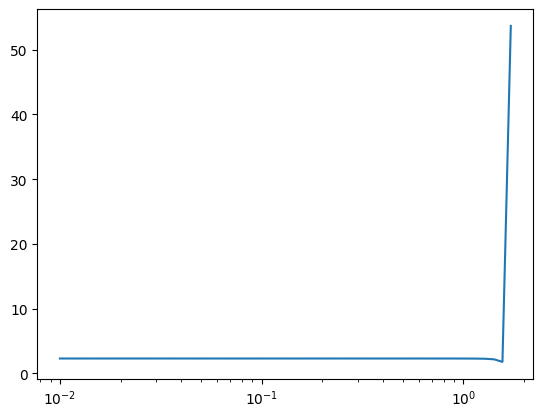</p>
</div>
</div>
<div class="cell" data-execution_count="7">
<div class="sourceCode cell-code" id="cb8"><pre class="sourceCode python code-with-copy"><code class="sourceCode python"><span id="cb8-1"><a href="#cb8-1" aria-hidden="true" tabindex="-1"></a>??nn.ReLU</span></code><button title="Copy to Clipboard" class="code-copy-button"><i class="bi"></i></button></pre></div>
<div class="cell-output cell-output-stdout">
<pre><code>Init signature: nn.ReLU(inplace: bool = False)
Source:        
class ReLU(Module):
    r"""Applies the rectified linear unit function element-wise:

    :math:`\text{ReLU}(x) = (x)^+ = \max(0, x)`

    Args:
        inplace: can optionally do the operation in-place. Default: ``False``

    Shape:
        - Input: :math:`(*)`, where :math:`*` means any number of dimensions.
        - Output: :math:`(*)`, same shape as the input.

    .. image:: ../scripts/activation_images/ReLU.png

    Examples::

        &gt;&gt;&gt; m = nn.ReLU()
        &gt;&gt;&gt; input = torch.randn(2)
        &gt;&gt;&gt; output = m(input)


      An implementation of CReLU - https://arxiv.org/abs/1603.05201

        &gt;&gt;&gt; m = nn.ReLU()
        &gt;&gt;&gt; input = torch.randn(2).unsqueeze(0)
        &gt;&gt;&gt; output = torch.cat((m(input), m(-input)))
    """
    __constants__ = ['inplace']
    inplace: bool

    def __init__(self, inplace: bool = False):
        super().__init__()
        self.inplace = inplace

    def forward(self, input: Tensor) -&gt; Tensor:
        return F.relu(input, inplace=self.inplace)

    def extra_repr(self) -&gt; str:
        inplace_str = 'inplace=True' if self.inplace else ''
        return inplace_str
File:           ~/DEV/fastai/lib/python3.9/site-packages/torch/nn/modules/activation.py
Type:           type
Subclasses:     ReLU6</code></pre>
</div>
</div>
<div class="cell" data-execution_count="8">
<div class="sourceCode cell-code" id="cb10"><pre class="sourceCode python code-with-copy"><code class="sourceCode python"><span id="cb10-1"><a href="#cb10-1" aria-hidden="true" tabindex="-1"></a><span class="co"># MetricCB returns  MultiClassAccuracy should just be called MeanSquareErrorList</span></span>
<span id="cb10-2"><a href="#cb10-2" aria-hidden="true" tabindex="-1"></a>metrics <span class="op">=</span> MetricsCB(accuracy<span class="op">=</span>MulticlassAccuracy()) </span>
<span id="cb10-3"><a href="#cb10-3" aria-hidden="true" tabindex="-1"></a>astats <span class="op">=</span> ActivationStats(fc.risinstance(nn.ReLU))</span>
<span id="cb10-4"><a href="#cb10-4" aria-hidden="true" tabindex="-1"></a>cbs <span class="op">=</span> [DeviceCB(), metrics, ProgressCB(plot<span class="op">=</span><span class="va">True</span>), astats] <span class="co"># </span></span>
<span id="cb10-5"><a href="#cb10-5" aria-hidden="true" tabindex="-1"></a>learn <span class="op">=</span> MomentumLearner(get_model(), dls, F.cross_entropy, lr<span class="op">=</span><span class="fl">0.2</span>, cbs<span class="op">=</span>cbs)</span></code><button title="Copy to Clipboard" class="code-copy-button"><i class="bi"></i></button></pre></div>
</div>
<div class="cell" data-execution_count="9">
<div class="sourceCode cell-code" id="cb11"><pre class="sourceCode python code-with-copy"><code class="sourceCode python"><span id="cb11-1"><a href="#cb11-1" aria-hidden="true" tabindex="-1"></a>learn.fit(<span class="dv">1</span>)</span></code><button title="Copy to Clipboard" class="code-copy-button"><i class="bi"></i></button></pre></div>
<div class="cell-output cell-output-display">

<style>
    /* Turns off some styling */
    progress {
        /* gets rid of default border in Firefox and Opera. */
        border: none;
        /* Needs to be in here for Safari polyfill so background images work as expected. */
        background-size: auto;
    }
    progress:not([value]), progress:not([value])::-webkit-progress-bar {
        background: repeating-linear-gradient(45deg, #7e7e7e, #7e7e7e 10px, #5c5c5c 10px, #5c5c5c 20px);
    }
    .progress-bar-interrupted, .progress-bar-interrupted::-webkit-progress-bar {
        background: #F44336;
    }
</style>
</div>
<div class="cell-output cell-output-display">
<table class="dataframe table table-sm table-striped small" data-quarto-postprocess="true" data-border="1">
<thead>
<tr class="header">
<th data-quarto-table-cell-role="th">accuracy</th>
<th data-quarto-table-cell-role="th">loss</th>
<th data-quarto-table-cell-role="th">epoch</th>
<th data-quarto-table-cell-role="th">train</th>
</tr>
</thead>
<tbody>
<tr class="odd">
<td>0.102</td>
<td>2.302</td>
<td>0</td>
<td>train</td>
</tr>
<tr class="even">
<td>0.100</td>
<td>2.301</td>
<td>0</td>
<td>eval</td>
</tr>
</tbody>
</table>
</div>
<div class="cell-output cell-output-display">
<p>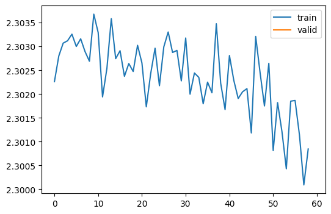</p>
</div>
</div>
<div class="cell" data-execution_count="10">
<div class="sourceCode cell-code" id="cb12"><pre class="sourceCode python code-with-copy"><code class="sourceCode python"><span id="cb12-1"><a href="#cb12-1" aria-hidden="true" tabindex="-1"></a>astats.color_dim()</span></code><button title="Copy to Clipboard" class="code-copy-button"><i class="bi"></i></button></pre></div>
<div class="cell-output cell-output-display">
<p>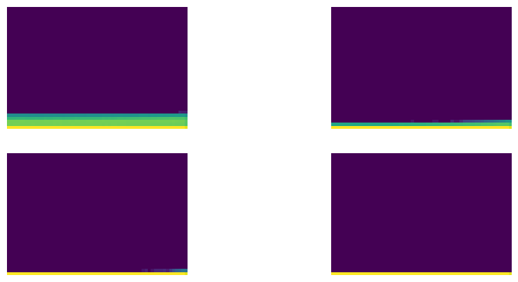</p>
</div>
</div>
<div class="cell" data-execution_count="11">
<div class="sourceCode cell-code" id="cb13"><pre class="sourceCode python code-with-copy"><code class="sourceCode python"><span id="cb13-1"><a href="#cb13-1" aria-hidden="true" tabindex="-1"></a>astats.plot_stats()</span></code><button title="Copy to Clipboard" class="code-copy-button"><i class="bi"></i></button></pre></div>
<div class="cell-output cell-output-display">
<p>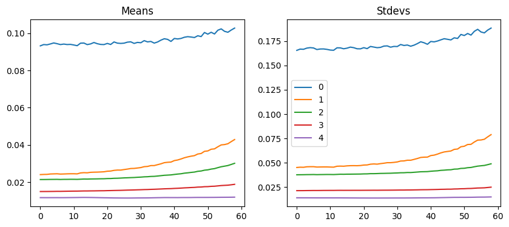</p>
</div>
</div>
<p>::: {.cell 0=‘e’ 1=‘x’ 2=‘p’ 3=‘o’ 4=‘r’ 5=‘t’ execution_count=12}</p>
<div class="sourceCode cell-code" id="cb14"><pre class="sourceCode python code-with-copy"><code class="sourceCode python"><span id="cb14-1"><a href="#cb14-1" aria-hidden="true" tabindex="-1"></a><span class="kw">def</span> clean_ipython_hist():</span>
<span id="cb14-2"><a href="#cb14-2" aria-hidden="true" tabindex="-1"></a>    <span class="co"># Code in this function mainly copied from IPython source</span></span>
<span id="cb14-3"><a href="#cb14-3" aria-hidden="true" tabindex="-1"></a>    <span class="cf">if</span> <span class="kw">not</span> <span class="st">'get_ipython'</span> <span class="kw">in</span> <span class="bu">globals</span>(): <span class="cf">return</span></span>
<span id="cb14-4"><a href="#cb14-4" aria-hidden="true" tabindex="-1"></a>    ip <span class="op">=</span> get_ipython()</span>
<span id="cb14-5"><a href="#cb14-5" aria-hidden="true" tabindex="-1"></a>    user_ns <span class="op">=</span> ip.user_ns</span>
<span id="cb14-6"><a href="#cb14-6" aria-hidden="true" tabindex="-1"></a>    ip.displayhook.flush()</span>
<span id="cb14-7"><a href="#cb14-7" aria-hidden="true" tabindex="-1"></a>    pc <span class="op">=</span> ip.displayhook.prompt_count <span class="op">+</span> <span class="dv">1</span></span>
<span id="cb14-8"><a href="#cb14-8" aria-hidden="true" tabindex="-1"></a>    <span class="cf">for</span> n <span class="kw">in</span> <span class="bu">range</span>(<span class="dv">1</span>, pc): user_ns.pop(<span class="st">'_i'</span><span class="op">+</span><span class="bu">repr</span>(n),<span class="va">None</span>)</span>
<span id="cb14-9"><a href="#cb14-9" aria-hidden="true" tabindex="-1"></a>    user_ns.update(<span class="bu">dict</span>(_i<span class="op">=</span><span class="st">''</span>,_ii<span class="op">=</span><span class="st">''</span>,_iii<span class="op">=</span><span class="st">''</span>))</span>
<span id="cb14-10"><a href="#cb14-10" aria-hidden="true" tabindex="-1"></a>    hm <span class="op">=</span> ip.history_manager</span>
<span id="cb14-11"><a href="#cb14-11" aria-hidden="true" tabindex="-1"></a>    hm.input_hist_parsed[:] <span class="op">=</span> [<span class="st">''</span>] <span class="op">*</span> pc</span>
<span id="cb14-12"><a href="#cb14-12" aria-hidden="true" tabindex="-1"></a>    hm.input_hist_raw[:] <span class="op">=</span> [<span class="st">''</span>] <span class="op">*</span> pc</span>
<span id="cb14-13"><a href="#cb14-13" aria-hidden="true" tabindex="-1"></a>    hm._i <span class="op">=</span> hm._ii <span class="op">=</span> hm._iii <span class="op">=</span> hm._i00 <span class="op">=</span>  <span class="st">''</span></span></code><button title="Copy to Clipboard" class="code-copy-button"><i class="bi"></i></button></pre></div>
<p>:::</p>
<p>::: {.cell 0=‘e’ 1=‘x’ 2=‘p’ 3=‘o’ 4=‘r’ 5=‘t’ execution_count=13}</p>
<div class="sourceCode cell-code" id="cb15"><pre class="sourceCode python code-with-copy"><code class="sourceCode python"><span id="cb15-1"><a href="#cb15-1" aria-hidden="true" tabindex="-1"></a><span class="kw">def</span> clean_tb():</span>
<span id="cb15-2"><a href="#cb15-2" aria-hidden="true" tabindex="-1"></a>    <span class="co"># h/t Piotr Czapla</span></span>
<span id="cb15-3"><a href="#cb15-3" aria-hidden="true" tabindex="-1"></a>    <span class="cf">if</span> <span class="bu">hasattr</span>(sys, <span class="st">'last_traceback'</span>):</span>
<span id="cb15-4"><a href="#cb15-4" aria-hidden="true" tabindex="-1"></a>        traceback.clear_frames(sys.last_traceback)</span>
<span id="cb15-5"><a href="#cb15-5" aria-hidden="true" tabindex="-1"></a>        <span class="bu">delattr</span>(sys, <span class="st">'last_traceback'</span>)</span>
<span id="cb15-6"><a href="#cb15-6" aria-hidden="true" tabindex="-1"></a>    <span class="cf">if</span> <span class="bu">hasattr</span>(sys, <span class="st">'last_type'</span>): <span class="bu">delattr</span>(sys, <span class="st">'last_type'</span>)</span>
<span id="cb15-7"><a href="#cb15-7" aria-hidden="true" tabindex="-1"></a>    <span class="cf">if</span> <span class="bu">hasattr</span>(sys, <span class="st">'last_value'</span>): <span class="bu">delattr</span>(sys, <span class="st">'last_value'</span>)</span></code><button title="Copy to Clipboard" class="code-copy-button"><i class="bi"></i></button></pre></div>
<p>:::</p>
<p>::: {.cell 0=‘e’ 1=‘x’ 2=‘p’ 3=‘o’ 4=‘r’ 5=‘t’ execution_count=14}</p>
<div class="sourceCode cell-code" id="cb16"><pre class="sourceCode python code-with-copy"><code class="sourceCode python"><span id="cb16-1"><a href="#cb16-1" aria-hidden="true" tabindex="-1"></a><span class="kw">def</span> clean_mem():</span>
<span id="cb16-2"><a href="#cb16-2" aria-hidden="true" tabindex="-1"></a>    clean_tb()</span>
<span id="cb16-3"><a href="#cb16-3" aria-hidden="true" tabindex="-1"></a>    clean_ipython_hist()</span>
<span id="cb16-4"><a href="#cb16-4" aria-hidden="true" tabindex="-1"></a>    gc.collect()</span>
<span id="cb16-5"><a href="#cb16-5" aria-hidden="true" tabindex="-1"></a>    torch.cuda.empty_cache()</span></code><button title="Copy to Clipboard" class="code-copy-button"><i class="bi"></i></button></pre></div>
<p>:::</p>
<section id="glorotxavier-init" class="level2">
<h2 class="anchored" data-anchor-id="glorotxavier-init">Glorot/Xavier init</h2>
<div class="cell" data-execution_count="15">
<div class="sourceCode cell-code" id="cb17"><pre class="sourceCode python code-with-copy"><code class="sourceCode python"><span id="cb17-1"><a href="#cb17-1" aria-hidden="true" tabindex="-1"></a>x <span class="op">=</span> torch.randn(<span class="dv">200</span>, <span class="dv">100</span>)</span>
<span id="cb17-2"><a href="#cb17-2" aria-hidden="true" tabindex="-1"></a><span class="cf">for</span> i <span class="kw">in</span> <span class="bu">range</span>(<span class="dv">50</span>): x <span class="op">=</span> x <span class="op">@</span> torch.randn(<span class="dv">100</span>,<span class="dv">100</span>)</span>
<span id="cb17-3"><a href="#cb17-3" aria-hidden="true" tabindex="-1"></a>x[<span class="dv">0</span>:<span class="dv">5</span>,<span class="dv">0</span>:<span class="dv">5</span>]</span></code><button title="Copy to Clipboard" class="code-copy-button"><i class="bi"></i></button></pre></div>
<div class="cell-output cell-output-display" data-execution_count="15">
<pre><code>tensor([[nan, nan, nan, nan, nan],
        [nan, nan, nan, nan, nan],
        [nan, nan, nan, nan, nan],
        [nan, nan, nan, nan, nan],
        [nan, nan, nan, nan, nan]])</code></pre>
</div>
</div>
<p>The result is <code>nan</code>s everywhere. So maybe the scale of our matrix was too big, and we need to have smaller weights? But if we use too small weights, we will have the opposite problem—the scale of our activations will go from 1 to 0.1, and after 50 layers we’ll be left with zeros everywhere:</p>
<div class="cell" data-execution_count="16">
<div class="sourceCode cell-code" id="cb19"><pre class="sourceCode python code-with-copy"><code class="sourceCode python"><span id="cb19-1"><a href="#cb19-1" aria-hidden="true" tabindex="-1"></a>x <span class="op">=</span> torch.randn(<span class="dv">200</span>, <span class="dv">100</span>)</span>
<span id="cb19-2"><a href="#cb19-2" aria-hidden="true" tabindex="-1"></a><span class="cf">for</span> i <span class="kw">in</span> <span class="bu">range</span>(<span class="dv">50</span>): x <span class="op">=</span> x <span class="op">@</span> (torch.randn(<span class="dv">100</span>,<span class="dv">100</span>) <span class="op">*</span> <span class="fl">0.09999</span>)</span>
<span id="cb19-3"><a href="#cb19-3" aria-hidden="true" tabindex="-1"></a>x[:<span class="dv">5</span>,:<span class="dv">5</span>]</span></code><button title="Copy to Clipboard" class="code-copy-button"><i class="bi"></i></button></pre></div>
<div class="cell-output cell-output-display" data-execution_count="16">
<pre><code>tensor([[ 0.22,  0.31,  0.02,  0.64, -0.24],
        [-0.90, -0.39,  0.64, -1.80, -0.85],
        [ 0.50, -0.41, -0.01,  1.00, -0.51],
        [-0.13, -0.79,  0.11,  0.03, -1.17],
        [-0.17,  0.41, -0.41, -0.16,  0.28]])</code></pre>
</div>
</div>
<p>So we have to scale our weight matrices exactly right so that the standard deviation of our activations stays at 1. We can compute the exact value to use mathematically, as illustrated by Xavier Glorot and Yoshua Bengio in <a href="http://proceedings.mlr.press/v9/glorot10a/glorot10a.pdf">“Understanding the Difficulty of Training Deep Feedforward Neural Networks”</a>. The right scale for a given layer is <span class="math inline">\(1/\sqrt{n_{in}}\)</span>, where <span class="math inline">\(n_{in}\)</span> represents the number of inputs.</p>
<div class="cell" data-execution_count="17">
<div class="sourceCode cell-code" id="cb21"><pre class="sourceCode python code-with-copy"><code class="sourceCode python"><span id="cb21-1"><a href="#cb21-1" aria-hidden="true" tabindex="-1"></a>x <span class="op">=</span> torch.randn(<span class="dv">200</span>, <span class="dv">100</span>)</span>
<span id="cb21-2"><a href="#cb21-2" aria-hidden="true" tabindex="-1"></a><span class="cf">for</span> i <span class="kw">in</span> <span class="bu">range</span>(<span class="dv">50</span>): x <span class="op">=</span> x <span class="op">@</span> (torch.randn(<span class="dv">100</span>,<span class="dv">100</span>) <span class="op">*</span> <span class="fl">0.1</span>)</span>
<span id="cb21-3"><a href="#cb21-3" aria-hidden="true" tabindex="-1"></a>x[<span class="dv">0</span>:<span class="dv">5</span>,<span class="dv">0</span>:<span class="dv">5</span>]</span></code><button title="Copy to Clipboard" class="code-copy-button"><i class="bi"></i></button></pre></div>
<div class="cell-output cell-output-display" data-execution_count="17">
<pre><code>tensor([[ 0.07, -0.23, -0.14, -0.39,  0.27],
        [ 0.53, -0.32,  0.19, -0.79,  0.86],
        [-0.11,  0.55, -0.78,  0.46,  0.05],
        [ 0.45, -0.42,  0.02, -1.02,  1.01],
        [ 0.91, -1.30,  0.17, -0.99, -0.71]])</code></pre>
</div>
</div>
<div class="cell" data-execution_count="18">
<div class="sourceCode cell-code" id="cb23"><pre class="sourceCode python code-with-copy"><code class="sourceCode python"><span id="cb23-1"><a href="#cb23-1" aria-hidden="true" tabindex="-1"></a>x <span class="op">=</span> torch.randn(<span class="dv">200</span>, <span class="dv">100</span>)</span>
<span id="cb23-2"><a href="#cb23-2" aria-hidden="true" tabindex="-1"></a><span class="cf">for</span> i <span class="kw">in</span> <span class="bu">range</span>(<span class="dv">50</span>): x <span class="op">=</span> x <span class="op">@</span> (torch.randn(<span class="dv">100</span>,<span class="dv">100</span>) <span class="op">*</span> <span class="fl">0.1</span>)</span>
<span id="cb23-3"><a href="#cb23-3" aria-hidden="true" tabindex="-1"></a>x[<span class="dv">0</span>:<span class="dv">5</span>,<span class="dv">0</span>:<span class="dv">5</span>]</span></code><button title="Copy to Clipboard" class="code-copy-button"><i class="bi"></i></button></pre></div>
<div class="cell-output cell-output-display" data-execution_count="18">
<pre><code>tensor([[-0.78, -0.01,  0.21,  0.08, -0.03],
        [-0.41,  0.49,  0.49, -0.66,  0.14],
        [ 0.52, -0.67, -2.25,  1.15,  0.34],
        [-0.49, -0.01,  0.76,  0.08, -0.17],
        [ 0.81, -0.12, -1.19,  0.25, -0.19]])</code></pre>
</div>
</div>
<section id="background" class="level3">
<h3 class="anchored" data-anchor-id="background">Background</h3>
</section>
<section id="variance-and-standard-deviation" class="level3">
<h3 class="anchored" data-anchor-id="variance-and-standard-deviation">Variance and standard deviation</h3>
<p>Variance is the average of how far away each data point is from the mean. E.g.:</p>
<div class="cell" data-execution_count="19">
<div class="sourceCode cell-code" id="cb25"><pre class="sourceCode python code-with-copy"><code class="sourceCode python"><span id="cb25-1"><a href="#cb25-1" aria-hidden="true" tabindex="-1"></a>t <span class="op">=</span> torch.tensor([<span class="fl">1.</span>,<span class="fl">2.</span>,<span class="fl">4.</span>,<span class="dv">18</span>])</span></code><button title="Copy to Clipboard" class="code-copy-button"><i class="bi"></i></button></pre></div>
</div>
<div class="cell" data-execution_count="20">
<div class="sourceCode cell-code" id="cb26"><pre class="sourceCode python code-with-copy"><code class="sourceCode python"><span id="cb26-1"><a href="#cb26-1" aria-hidden="true" tabindex="-1"></a>m <span class="op">=</span> t.mean()<span class="op">;</span> m</span></code><button title="Copy to Clipboard" class="code-copy-button"><i class="bi"></i></button></pre></div>
<div class="cell-output cell-output-display" data-execution_count="20">
<pre><code>tensor(6.25)</code></pre>
</div>
</div>
<div class="cell" data-execution_count="21">
<div class="sourceCode cell-code" id="cb28"><pre class="sourceCode python code-with-copy"><code class="sourceCode python"><span id="cb28-1"><a href="#cb28-1" aria-hidden="true" tabindex="-1"></a>(t<span class="op">-</span>m).mean()</span></code><button title="Copy to Clipboard" class="code-copy-button"><i class="bi"></i></button></pre></div>
<div class="cell-output cell-output-display" data-execution_count="21">
<pre><code>tensor(0.)</code></pre>
</div>
</div>
<p>Oops. We can’t do that. Because by definition the positives and negatives cancel out. So we can fix that in one of (at least) two ways:</p>
<div class="cell" data-execution_count="22">
<div class="sourceCode cell-code" id="cb30"><pre class="sourceCode python code-with-copy"><code class="sourceCode python"><span id="cb30-1"><a href="#cb30-1" aria-hidden="true" tabindex="-1"></a>(t<span class="op">-</span>m).<span class="bu">pow</span>(<span class="dv">2</span>).mean()</span></code><button title="Copy to Clipboard" class="code-copy-button"><i class="bi"></i></button></pre></div>
<div class="cell-output cell-output-display" data-execution_count="22">
<pre><code>tensor(47.19)</code></pre>
</div>
</div>
<div class="cell" data-execution_count="23">
<div class="sourceCode cell-code" id="cb32"><pre class="sourceCode python code-with-copy"><code class="sourceCode python"><span id="cb32-1"><a href="#cb32-1" aria-hidden="true" tabindex="-1"></a>(t<span class="op">-</span>m).<span class="bu">abs</span>().mean()</span></code><button title="Copy to Clipboard" class="code-copy-button"><i class="bi"></i></button></pre></div>
<div class="cell-output cell-output-display" data-execution_count="23">
<pre><code>tensor(5.88)</code></pre>
</div>
</div>
<p>But the first of these is now a totally different scale, since we squared. So let’s undo that at the end.</p>
<div class="cell" data-execution_count="24">
<div class="sourceCode cell-code" id="cb34"><pre class="sourceCode python code-with-copy"><code class="sourceCode python"><span id="cb34-1"><a href="#cb34-1" aria-hidden="true" tabindex="-1"></a>(t<span class="op">-</span>m).<span class="bu">pow</span>(<span class="dv">2</span>).mean().sqrt()</span></code><button title="Copy to Clipboard" class="code-copy-button"><i class="bi"></i></button></pre></div>
<div class="cell-output cell-output-display" data-execution_count="24">
<pre><code>tensor(6.87)</code></pre>
</div>
</div>
<p>They’re still different. Why?</p>
<p>Note that we have one outlier (<code>18</code>). In the version where we square everything, it makes that much bigger than everything else.</p>
<p><code>(t-m).pow(2).mean()</code> is refered to as <strong>variance</strong>. It’s a measure of how spread out the data is, and is particularly sensitive to outliers.</p>
<p>When we take the sqrt of the variance, we get the <strong>standard deviation</strong>. Since it’s on the same kind of scale as the original data, it’s generally more interpretable. However, since <code>sqrt(1)==1</code>, it doesn’t much matter which we use when talking about <em>unit variance</em> for initializing neural nets.</p>
<p>The standard deviation represents if the data stays close to the mean or on the contrary gets values that are far away. It’s computed by the following formula:</p>
<p><span class="math display">\[\sigma = \sqrt{\frac{1}{n}\left[(t_{0}-m)^{2} + (t_{1}-m)^{2} + \cdots + (t_{n-1}-m)^{2}\right]}\]</span></p>
<p>where m is the mean and <span class="math inline">\(\sigma\)</span> (the greek letter sigma) is the standard deviation. Here we have a mean of 0, so it’s just the square root of the mean of x squared.</p>
<p><code>(t-m).abs().mean()</code> is referred to as the <strong>mean absolute deviation</strong>. It isn’t used nearly as much as it deserves to be, because mathematicians don’t like how awkward it is to work with. But that shouldn’t stop us, because we have computers and stuff.</p>
<p>Here’s a useful thing to note about variance:</p>
<div class="cell" data-execution_count="25">
<div class="sourceCode cell-code" id="cb36"><pre class="sourceCode python code-with-copy"><code class="sourceCode python"><span id="cb36-1"><a href="#cb36-1" aria-hidden="true" tabindex="-1"></a>(t<span class="op">-</span>m).<span class="bu">pow</span>(<span class="dv">2</span>).mean(), (t<span class="op">*</span>t).mean() <span class="op">-</span> (m<span class="op">*</span>m)</span></code><button title="Copy to Clipboard" class="code-copy-button"><i class="bi"></i></button></pre></div>
<div class="cell-output cell-output-display" data-execution_count="25">
<pre><code>(tensor(47.19), tensor(47.19))</code></pre>
</div>
</div>
<p>You can see why these are equal if you want to work thru the algebra. Or not.</p>
<p>But, what’s important here is that the latter is generally much easier to work with. In particular, you only have to track two things: the sum of the data, and the sum of squares of the data. Whereas in the first form you actually have to go thru all the data twice (once to calculate the mean, once to calculate the differences).</p>
<p>Let’s go steal the LaTeX from <a href="https://en.wikipedia.org/wiki/Variance">Wikipedia</a>:</p>
<p><span class="math display">\[\operatorname{E}\left[T^2 \right] - \operatorname{E}[T]^2\]</span></p>
</section>
<section id="covariance" class="level3">
<h3 class="anchored" data-anchor-id="covariance">Covariance</h3>
<p>Here’s how Wikipedia defines covariance:</p>
<p><span class="math display">\[\operatorname{cov}(T,V) = \operatorname{E}{\big[(T - \operatorname{E}[T])(V - \operatorname{E}[V])\big]}\]</span></p>
<p>Let’s see that in code. So now we need two vectors.</p>
<div class="cell" data-execution_count="26">
<div class="sourceCode cell-code" id="cb38"><pre class="sourceCode python code-with-copy"><code class="sourceCode python"><span id="cb38-1"><a href="#cb38-1" aria-hidden="true" tabindex="-1"></a>t</span></code><button title="Copy to Clipboard" class="code-copy-button"><i class="bi"></i></button></pre></div>
<div class="cell-output cell-output-display" data-execution_count="26">
<pre><code>tensor([ 1.,  2.,  4., 18.])</code></pre>
</div>
</div>
<div class="cell" data-execution_count="27">
<div class="sourceCode cell-code" id="cb40"><pre class="sourceCode python code-with-copy"><code class="sourceCode python"><span id="cb40-1"><a href="#cb40-1" aria-hidden="true" tabindex="-1"></a><span class="co"># `u` is twice `t`, plus a bit of randomness</span></span>
<span id="cb40-2"><a href="#cb40-2" aria-hidden="true" tabindex="-1"></a>u <span class="op">=</span> t<span class="op">*</span><span class="dv">2</span></span>
<span id="cb40-3"><a href="#cb40-3" aria-hidden="true" tabindex="-1"></a>u <span class="op">*=</span> torch.randn_like(t)<span class="op">/</span><span class="dv">10</span><span class="op">+</span><span class="fl">0.95</span></span>
<span id="cb40-4"><a href="#cb40-4" aria-hidden="true" tabindex="-1"></a></span>
<span id="cb40-5"><a href="#cb40-5" aria-hidden="true" tabindex="-1"></a>plt.scatter(t, u)<span class="op">;</span></span></code><button title="Copy to Clipboard" class="code-copy-button"><i class="bi"></i></button></pre></div>
<div class="cell-output cell-output-display">
<p>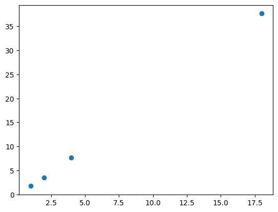</p>
</div>
</div>
<div class="cell" data-execution_count="28">
<div class="sourceCode cell-code" id="cb41"><pre class="sourceCode python code-with-copy"><code class="sourceCode python"><span id="cb41-1"><a href="#cb41-1" aria-hidden="true" tabindex="-1"></a>prod <span class="op">=</span> (t<span class="op">-</span>t.mean())<span class="op">*</span>(u<span class="op">-</span>u.mean())<span class="op">;</span> prod</span></code><button title="Copy to Clipboard" class="code-copy-button"><i class="bi"></i></button></pre></div>
<div class="cell-output cell-output-display" data-execution_count="28">
<pre><code>tensor([ 57.09,  38.90,  11.25, 294.03])</code></pre>
</div>
</div>
<div class="cell" data-execution_count="29">
<div class="sourceCode cell-code" id="cb43"><pre class="sourceCode python code-with-copy"><code class="sourceCode python"><span id="cb43-1"><a href="#cb43-1" aria-hidden="true" tabindex="-1"></a>prod.mean()</span></code><button title="Copy to Clipboard" class="code-copy-button"><i class="bi"></i></button></pre></div>
<div class="cell-output cell-output-display" data-execution_count="29">
<pre><code>tensor(100.31)</code></pre>
</div>
</div>
<div class="cell" data-execution_count="30">
<div class="sourceCode cell-code" id="cb45"><pre class="sourceCode python code-with-copy"><code class="sourceCode python"><span id="cb45-1"><a href="#cb45-1" aria-hidden="true" tabindex="-1"></a>v <span class="op">=</span> torch.randn_like(t)</span>
<span id="cb45-2"><a href="#cb45-2" aria-hidden="true" tabindex="-1"></a>plt.scatter(t, v)<span class="op">;</span></span></code><button title="Copy to Clipboard" class="code-copy-button"><i class="bi"></i></button></pre></div>
<div class="cell-output cell-output-display">
<p>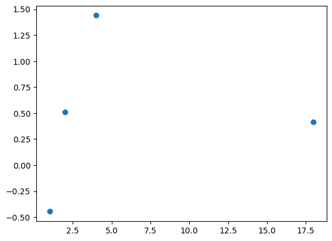</p>
</div>
</div>
<div class="cell" data-execution_count="31">
<div class="sourceCode cell-code" id="cb46"><pre class="sourceCode python code-with-copy"><code class="sourceCode python"><span id="cb46-1"><a href="#cb46-1" aria-hidden="true" tabindex="-1"></a>((t<span class="op">-</span>t.mean())<span class="op">*</span>(v<span class="op">-</span>v.mean())).mean()</span></code><button title="Copy to Clipboard" class="code-copy-button"><i class="bi"></i></button></pre></div>
<div class="cell-output cell-output-display" data-execution_count="31">
<pre><code>tensor(0.45)</code></pre>
</div>
</div>
<p>It’s generally more conveniently defined like so:</p>
<p><span class="math display">\[\operatorname{E}\left[T V\right] - \operatorname{E}\left[T\right] \operatorname{E}\left[V\right]\]</span></p>
<div class="cell" data-execution_count="32">
<div class="sourceCode cell-code" id="cb48"><pre class="sourceCode python code-with-copy"><code class="sourceCode python"><span id="cb48-1"><a href="#cb48-1" aria-hidden="true" tabindex="-1"></a>cov <span class="op">=</span> (t<span class="op">*</span>v).mean() <span class="op">-</span> t.mean()<span class="op">*</span>v.mean()<span class="op">;</span> cov</span></code><button title="Copy to Clipboard" class="code-copy-button"><i class="bi"></i></button></pre></div>
<div class="cell-output cell-output-display" data-execution_count="32">
<pre><code>tensor(0.45)</code></pre>
</div>
</div>
<p>From now on, you’re not allowed to look at an equation (or especially type it in LaTeX) without also typing it in Python and actually calculating some values. Ideally, you should also plot some values.</p>
<p>Finally, here is the Pearson correlation coefficient:</p>
<p><span class="math display">\[\rho_{T,V}= \frac{\operatorname{cov}(T,V)}{\sigma_T \sigma_V}\]</span></p>
<div class="cell" data-execution_count="33">
<div class="sourceCode cell-code" id="cb50"><pre class="sourceCode python code-with-copy"><code class="sourceCode python"><span id="cb50-1"><a href="#cb50-1" aria-hidden="true" tabindex="-1"></a>cov <span class="op">/</span> (t.std() <span class="op">*</span> v.std())</span></code><button title="Copy to Clipboard" class="code-copy-button"><i class="bi"></i></button></pre></div>
<div class="cell-output cell-output-display" data-execution_count="33">
<pre><code>tensor(0.07)</code></pre>
</div>
</div>
<p>It’s just a scaled version of the same thing.</p>
<div class="cell" data-execution_count="34">
<div class="sourceCode cell-code" id="cb52"><pre class="sourceCode python code-with-copy"><code class="sourceCode python"><span id="cb52-1"><a href="#cb52-1" aria-hidden="true" tabindex="-1"></a>x.std()</span></code><button title="Copy to Clipboard" class="code-copy-button"><i class="bi"></i></button></pre></div>
<div class="cell-output cell-output-display" data-execution_count="34">
<pre><code>tensor(0.64)</code></pre>
</div>
</div>
</section>
<section id="xavier-init-derivation" class="level3">
<h3 class="anchored" data-anchor-id="xavier-init-derivation">Xavier init derivation</h3>
<p>When we do <code>y = a @ x</code>, the coefficients of <code>y</code> are defined by</p>
<p><span class="math display">\[y_{i} = a_{i,0} x_{0} + a_{i,1} x_{1} + \cdots + a_{i,n-1} x_{n-1} = \sum_{k=0}^{n-1} a_{i,k} x_{k}\]</span></p>
<p>or in pure python code:</p>
<pre><code>y[i] = sum([c*d for c,d in zip(a[i], x)])</code></pre>
<p>or in numpy/pytorch code:</p>
<pre><code>y[i] = (a[i]*x).sum()</code></pre>
<p>At the very beginning, our <code>x</code> vector has a mean of roughly 0. and a standard deviation of roughly 1. (since we picked it that way).</p>
<div class="cell" data-execution_count="35">
<div class="sourceCode cell-code" id="cb56"><pre class="sourceCode python code-with-copy"><code class="sourceCode python"><span id="cb56-1"><a href="#cb56-1" aria-hidden="true" tabindex="-1"></a>x <span class="op">=</span> torch.randn(<span class="dv">100</span>)</span>
<span id="cb56-2"><a href="#cb56-2" aria-hidden="true" tabindex="-1"></a>x.mean(), x.std()</span></code><button title="Copy to Clipboard" class="code-copy-button"><i class="bi"></i></button></pre></div>
<div class="cell-output cell-output-display" data-execution_count="35">
<pre><code>(tensor(-0.14), tensor(1.02))</code></pre>
</div>
</div>
<p>If we go back to <code>y = a @ x</code> and assume that we chose weights for <code>a</code> that also have a mean of 0, we can compute the standard deviation of <code>y</code> quite easily. Since it’s random, and we may fall on bad numbers, we repeat the operation 100 times.</p>
<div class="cell" data-execution_count="36">
<div class="sourceCode cell-code" id="cb58"><pre class="sourceCode python code-with-copy"><code class="sourceCode python"><span id="cb58-1"><a href="#cb58-1" aria-hidden="true" tabindex="-1"></a>mean,sqr <span class="op">=</span> <span class="fl">0.</span>,<span class="fl">0.</span></span>
<span id="cb58-2"><a href="#cb58-2" aria-hidden="true" tabindex="-1"></a><span class="cf">for</span> i <span class="kw">in</span> <span class="bu">range</span>(<span class="dv">100</span>):</span>
<span id="cb58-3"><a href="#cb58-3" aria-hidden="true" tabindex="-1"></a>    x <span class="op">=</span> torch.randn(<span class="dv">100</span>)</span>
<span id="cb58-4"><a href="#cb58-4" aria-hidden="true" tabindex="-1"></a>    a <span class="op">=</span> torch.randn(<span class="dv">512</span>, <span class="dv">100</span>)</span>
<span id="cb58-5"><a href="#cb58-5" aria-hidden="true" tabindex="-1"></a>    y <span class="op">=</span> a <span class="op">@</span> x</span>
<span id="cb58-6"><a href="#cb58-6" aria-hidden="true" tabindex="-1"></a>    mean <span class="op">+=</span> y.mean().item()</span>
<span id="cb58-7"><a href="#cb58-7" aria-hidden="true" tabindex="-1"></a>    sqr  <span class="op">+=</span> y.<span class="bu">pow</span>(<span class="dv">2</span>).mean().item()</span>
<span id="cb58-8"><a href="#cb58-8" aria-hidden="true" tabindex="-1"></a>mean<span class="op">/</span><span class="dv">100</span>,sqr<span class="op">/</span><span class="dv">100</span></span></code><button title="Copy to Clipboard" class="code-copy-button"><i class="bi"></i></button></pre></div>
<div class="cell-output cell-output-display" data-execution_count="36">
<pre><code>(0.047022044900804756, 99.8852938079834)</code></pre>
</div>
</div>
<p>Now that looks very close to the dimension of our matrix 100. And that’s no coincidence! When you compute y, you sum 100 product of one element of a by one element of x. So what’s the mean and the standard deviation of such a product? We can show mathematically that as long as the elements in <code>a</code> and the elements in <code>x</code> are independent, the mean is 0 and the std is 1. This can also be seen experimentally:</p>
<div class="cell" data-execution_count="37">
<div class="sourceCode cell-code" id="cb60"><pre class="sourceCode python code-with-copy"><code class="sourceCode python"><span id="cb60-1"><a href="#cb60-1" aria-hidden="true" tabindex="-1"></a>mean,sqr <span class="op">=</span> <span class="fl">0.</span>,<span class="fl">0.</span></span>
<span id="cb60-2"><a href="#cb60-2" aria-hidden="true" tabindex="-1"></a><span class="cf">for</span> i <span class="kw">in</span> <span class="bu">range</span>(<span class="dv">10000</span>):</span>
<span id="cb60-3"><a href="#cb60-3" aria-hidden="true" tabindex="-1"></a>    x <span class="op">=</span> torch.randn(<span class="dv">1</span>)</span>
<span id="cb60-4"><a href="#cb60-4" aria-hidden="true" tabindex="-1"></a>    a <span class="op">=</span> torch.randn(<span class="dv">1</span>)</span>
<span id="cb60-5"><a href="#cb60-5" aria-hidden="true" tabindex="-1"></a>    y <span class="op">=</span> a<span class="op">*</span>x</span>
<span id="cb60-6"><a href="#cb60-6" aria-hidden="true" tabindex="-1"></a>    mean <span class="op">+=</span> y.item()</span>
<span id="cb60-7"><a href="#cb60-7" aria-hidden="true" tabindex="-1"></a>    sqr  <span class="op">+=</span> y.<span class="bu">pow</span>(<span class="dv">2</span>).item()</span>
<span id="cb60-8"><a href="#cb60-8" aria-hidden="true" tabindex="-1"></a>mean<span class="op">/</span><span class="dv">10000</span>,sqr<span class="op">/</span><span class="dv">10000</span></span></code><button title="Copy to Clipboard" class="code-copy-button"><i class="bi"></i></button></pre></div>
<div class="cell-output cell-output-display" data-execution_count="37">
<pre><code>(0.006906389824502185, 1.0311528373808903)</code></pre>
</div>
</div>
<p>Then we sum 100 of those things that have a mean of zero, and a mean of squares of 1, so we get something that has a mean of 0, and mean of square of 100, hence <code>math.sqrt(100)</code> being our magic number. If we scale the weights of the matrix and divide them by this <code>math.sqrt(100)</code>, it will give us a <code>y</code> of scale 1, and repeating the product has many times as we want won’t overflow or vanish.</p>
</section>
</section>
<section id="kaiminghe-init" class="level2">
<h2 class="anchored" data-anchor-id="kaiminghe-init">Kaiming/He init</h2>
<p>(“He” is a Chinese surname and is pronouced like “Her”, not like “Hee”.)</p>
<section id="background-1" class="level3">
<h3 class="anchored" data-anchor-id="background-1">Background</h3>
<div class="cell" data-execution_count="38">
<div class="sourceCode cell-code" id="cb62"><pre class="sourceCode python code-with-copy"><code class="sourceCode python"><span id="cb62-1"><a href="#cb62-1" aria-hidden="true" tabindex="-1"></a>x <span class="op">=</span> torch.randn(<span class="dv">200</span>, <span class="dv">100</span>)</span>
<span id="cb62-2"><a href="#cb62-2" aria-hidden="true" tabindex="-1"></a>y <span class="op">=</span> torch.randn(<span class="dv">200</span>)</span></code><button title="Copy to Clipboard" class="code-copy-button"><i class="bi"></i></button></pre></div>
</div>
<div class="cell" data-execution_count="39">
<div class="sourceCode cell-code" id="cb63"><pre class="sourceCode python code-with-copy"><code class="sourceCode python"><span id="cb63-1"><a href="#cb63-1" aria-hidden="true" tabindex="-1"></a><span class="im">from</span> math <span class="im">import</span> sqrt</span></code><button title="Copy to Clipboard" class="code-copy-button"><i class="bi"></i></button></pre></div>
</div>
<div class="cell" data-execution_count="40">
<div class="sourceCode cell-code" id="cb64"><pre class="sourceCode python code-with-copy"><code class="sourceCode python"><span id="cb64-1"><a href="#cb64-1" aria-hidden="true" tabindex="-1"></a>w1 <span class="op">=</span> torch.randn(<span class="dv">100</span>,<span class="dv">50</span>) <span class="op">/</span> sqrt(<span class="dv">100</span>)</span>
<span id="cb64-2"><a href="#cb64-2" aria-hidden="true" tabindex="-1"></a>b1 <span class="op">=</span> torch.zeros(<span class="dv">50</span>)</span>
<span id="cb64-3"><a href="#cb64-3" aria-hidden="true" tabindex="-1"></a>w2 <span class="op">=</span> torch.randn(<span class="dv">50</span>,<span class="dv">1</span>) <span class="op">/</span> sqrt(<span class="dv">50</span>)</span>
<span id="cb64-4"><a href="#cb64-4" aria-hidden="true" tabindex="-1"></a>b2 <span class="op">=</span> torch.zeros(<span class="dv">1</span>)</span></code><button title="Copy to Clipboard" class="code-copy-button"><i class="bi"></i></button></pre></div>
</div>
<div class="cell" data-execution_count="41">
<div class="sourceCode cell-code" id="cb65"><pre class="sourceCode python code-with-copy"><code class="sourceCode python"><span id="cb65-1"><a href="#cb65-1" aria-hidden="true" tabindex="-1"></a><span class="kw">def</span> lin(x, w, b): <span class="cf">return</span> x <span class="op">@</span> w <span class="op">+</span> b</span></code><button title="Copy to Clipboard" class="code-copy-button"><i class="bi"></i></button></pre></div>
</div>
<div class="cell" data-execution_count="42">
<div class="sourceCode cell-code" id="cb66"><pre class="sourceCode python code-with-copy"><code class="sourceCode python"><span id="cb66-1"><a href="#cb66-1" aria-hidden="true" tabindex="-1"></a>l1 <span class="op">=</span> lin(x, w1, b1)</span>
<span id="cb66-2"><a href="#cb66-2" aria-hidden="true" tabindex="-1"></a>l1.mean(),l1.std()</span></code><button title="Copy to Clipboard" class="code-copy-button"><i class="bi"></i></button></pre></div>
<div class="cell-output cell-output-display" data-execution_count="42">
<pre><code>(tensor(-0.00), tensor(1.00))</code></pre>
</div>
</div>
<div class="cell" data-execution_count="43">
<div class="sourceCode cell-code" id="cb68"><pre class="sourceCode python code-with-copy"><code class="sourceCode python"><span id="cb68-1"><a href="#cb68-1" aria-hidden="true" tabindex="-1"></a><span class="kw">def</span> relu(x): <span class="cf">return</span> x.clamp_min(<span class="fl">0.</span>)</span></code><button title="Copy to Clipboard" class="code-copy-button"><i class="bi"></i></button></pre></div>
</div>
<div class="cell" data-execution_count="44">
<div class="sourceCode cell-code" id="cb69"><pre class="sourceCode python code-with-copy"><code class="sourceCode python"><span id="cb69-1"><a href="#cb69-1" aria-hidden="true" tabindex="-1"></a>l2 <span class="op">=</span> relu(l1)</span>
<span id="cb69-2"><a href="#cb69-2" aria-hidden="true" tabindex="-1"></a>l2.mean(),l2.std()</span></code><button title="Copy to Clipboard" class="code-copy-button"><i class="bi"></i></button></pre></div>
<div class="cell-output cell-output-display" data-execution_count="44">
<pre><code>(tensor(0.40), tensor(0.59))</code></pre>
</div>
</div>
<div class="cell" data-execution_count="45">
<div class="sourceCode cell-code" id="cb71"><pre class="sourceCode python code-with-copy"><code class="sourceCode python"><span id="cb71-1"><a href="#cb71-1" aria-hidden="true" tabindex="-1"></a>x <span class="op">=</span> torch.randn(<span class="dv">200</span>, <span class="dv">100</span>)</span>
<span id="cb71-2"><a href="#cb71-2" aria-hidden="true" tabindex="-1"></a><span class="cf">for</span> i <span class="kw">in</span> <span class="bu">range</span>(<span class="dv">50</span>): x <span class="op">=</span> relu(x <span class="op">@</span> (torch.randn(<span class="dv">100</span>,<span class="dv">100</span>) <span class="op">*</span> <span class="fl">0.1</span>))</span>
<span id="cb71-3"><a href="#cb71-3" aria-hidden="true" tabindex="-1"></a>x[<span class="dv">0</span>:<span class="dv">5</span>,<span class="dv">0</span>:<span class="dv">5</span>]</span></code><button title="Copy to Clipboard" class="code-copy-button"><i class="bi"></i></button></pre></div>
<div class="cell-output cell-output-display" data-execution_count="45">
<pre><code>tensor([[    0.00,     0.00,     0.00,     0.00,     0.00],
        [    0.00,     0.00,     0.00,     0.00,     0.00],
        [    0.00,     0.00,     0.00,     0.00,     0.00],
        [    0.00,     0.00,     0.00,     0.00,     0.00],
        [    0.00,     0.00,     0.00,     0.00,     0.00]])</code></pre>
</div>
</div>
<p>In <a href="https://arxiv.org/abs/1502.01852">“Delving Deep into Rectifiers: Surpassing Human-Level Performance”</a> Kaiming He et al.&nbsp;show that we should use the following scale instead: <span class="math inline">\(\sqrt{2 / n_{in}}\)</span>, where <span class="math inline">\(n_{in}\)</span> is the number of inputs of our model.</p>
<div class="cell" data-execution_count="46">
<div class="sourceCode cell-code" id="cb73"><pre class="sourceCode python code-with-copy"><code class="sourceCode python"><span id="cb73-1"><a href="#cb73-1" aria-hidden="true" tabindex="-1"></a>x <span class="op">=</span> torch.randn(<span class="dv">200</span>, <span class="dv">100</span>)</span>
<span id="cb73-2"><a href="#cb73-2" aria-hidden="true" tabindex="-1"></a><span class="cf">for</span> i <span class="kw">in</span> <span class="bu">range</span>(<span class="dv">50</span>): x <span class="op">=</span> relu(x <span class="op">@</span> (torch.randn(<span class="dv">100</span>,<span class="dv">100</span>) <span class="op">*</span> sqrt(<span class="dv">2</span><span class="op">/</span><span class="dv">100</span>)))</span>
<span id="cb73-3"><a href="#cb73-3" aria-hidden="true" tabindex="-1"></a>x[<span class="dv">0</span>:<span class="dv">5</span>,<span class="dv">0</span>:<span class="dv">5</span>]</span></code><button title="Copy to Clipboard" class="code-copy-button"><i class="bi"></i></button></pre></div>
<div class="cell-output cell-output-display" data-execution_count="46">
<pre><code>tensor([[0., 0., 0., 0., 0.],
        [0., 0., 0., 0., 0.],
        [0., 0., 0., 0., 0.],
        [0., 0., 0., 0., 0.],
        [0., 0., 0., 0., 0.]])</code></pre>
</div>
</div>
</section>
<section id="applying-an-init-function" class="level3">
<h3 class="anchored" data-anchor-id="applying-an-init-function">Applying an init function</h3>
<div class="cell" data-execution_count="69">
<div class="sourceCode cell-code" id="cb75"><pre class="sourceCode python code-with-copy"><code class="sourceCode python"><span id="cb75-1"><a href="#cb75-1" aria-hidden="true" tabindex="-1"></a>model <span class="op">=</span> get_model()</span>
<span id="cb75-2"><a href="#cb75-2" aria-hidden="true" tabindex="-1"></a>model.<span class="bu">apply</span>(<span class="kw">lambda</span> m: <span class="bu">print</span>(<span class="bu">type</span>(m).<span class="va">__name__</span>))<span class="op">;</span></span></code><button title="Copy to Clipboard" class="code-copy-button"><i class="bi"></i></button></pre></div>
<div class="cell-output cell-output-stdout">
<pre><code>Conv2d
ReLU
Sequential
Conv2d
ReLU
Sequential
Conv2d
ReLU
Sequential
Conv2d
ReLU
Sequential
Conv2d
ReLU
Sequential
Conv2d
Flatten
Sequential</code></pre>
</div>
</div>
</section>
<section id="layer-sequential-unit-variance-initialization-lsuv-init" class="level3">
<h3 class="anchored" data-anchor-id="layer-sequential-unit-variance-initialization-lsuv-init">Layer-sequential Unit-Variance Initialization (LSUV-Init)</h3>
<p>Pre-initialize network with orthonormal matrices as in Saxe et al.&nbsp;(2014)</p>
<p><strong>for</strong> each layer <strong><em>L</em> do</strong> :<br>
$ :: $ <strong>while</strong> <span class="math inline">\(\mid Var (B_{L})-1.0\mid \:\ge \: Tol_{var} \: and \: (T_{i} \lt T_{max})\)</span> <strong>do:</strong><br>
$ :::: $ Forward pass with mini-batch<br>
$ :::: $ calculate <span class="math inline">\(Var(B_{L})\)</span><br>
$ ::::: W_{L}= W_{L}/$</p>
<p>L - convolution or fullconnected layer,<br>
WL - its weights,<br>
BL - its output blob,<br>
$ Tol_{var} $ - variance tolerance,<br>
$ {T_{i}} $ – current trial,<br>
$ {T_{max}}$ – max number of trials.<br>
$ {_{Saxe, Andrew M., McClelland, James L., and Ganguli, Surya.<br>
Exact solutions to the nonlinear dynamics of learning in deep linear neural networks. In Proceedings of ICLR, 2014. URL http: //arxiv.org/abs/1312.6120.}} $</p>
<div class="cell" data-execution_count="48">
<div class="sourceCode cell-code" id="cb77"><pre class="sourceCode python code-with-copy"><code class="sourceCode python"><span id="cb77-1"><a href="#cb77-1" aria-hidden="true" tabindex="-1"></a><span class="kw">class</span> LSUV(Callback):</span>
<span id="cb77-2"><a href="#cb77-2" aria-hidden="true" tabindex="-1"></a>    <span class="kw">def</span> <span class="fu">__init__</span>(<span class="va">self</span>, model, eps<span class="op">=</span><span class="fl">1e-6</span>):</span>
<span id="cb77-3"><a href="#cb77-3" aria-hidden="true" tabindex="-1"></a>        <span class="bu">super</span>().<span class="fu">__init__</span>()</span>
<span id="cb77-4"><a href="#cb77-4" aria-hidden="true" tabindex="-1"></a>        <span class="va">self</span>.model <span class="op">=</span> model</span>
<span id="cb77-5"><a href="#cb77-5" aria-hidden="true" tabindex="-1"></a>        <span class="va">self</span>.eps <span class="op">=</span> eps</span>
<span id="cb77-6"><a href="#cb77-6" aria-hidden="true" tabindex="-1"></a>    </span>
<span id="cb77-7"><a href="#cb77-7" aria-hidden="true" tabindex="-1"></a>    <span class="kw">def</span> <span class="fu">__call__</span>(<span class="va">self</span>, inputs, targets):</span>
<span id="cb77-8"><a href="#cb77-8" aria-hidden="true" tabindex="-1"></a>        <span class="co"># Compute the output of each layer</span></span>
<span id="cb77-9"><a href="#cb77-9" aria-hidden="true" tabindex="-1"></a>        outputs <span class="op">=</span> []</span>
<span id="cb77-10"><a href="#cb77-10" aria-hidden="true" tabindex="-1"></a>        <span class="cf">for</span> module <span class="kw">in</span> <span class="va">self</span>.model.modules():</span>
<span id="cb77-11"><a href="#cb77-11" aria-hidden="true" tabindex="-1"></a>            <span class="cf">if</span> <span class="bu">isinstance</span>(module, nn.Linear) <span class="kw">or</span> <span class="bu">isinstance</span>(module, nn.Conv2d):</span>
<span id="cb77-12"><a href="#cb77-12" aria-hidden="true" tabindex="-1"></a>                x <span class="op">=</span> module(inputs)</span>
<span id="cb77-13"><a href="#cb77-13" aria-hidden="true" tabindex="-1"></a>                outputs.append(x)</span>
<span id="cb77-14"><a href="#cb77-14" aria-hidden="true" tabindex="-1"></a>        </span>
<span id="cb77-15"><a href="#cb77-15" aria-hidden="true" tabindex="-1"></a>        <span class="co"># Compute the mean and standard deviation of each output</span></span>
<span id="cb77-16"><a href="#cb77-16" aria-hidden="true" tabindex="-1"></a>        means <span class="op">=</span> []</span>
<span id="cb77-17"><a href="#cb77-17" aria-hidden="true" tabindex="-1"></a>        stds <span class="op">=</span> []</span>
<span id="cb77-18"><a href="#cb77-18" aria-hidden="true" tabindex="-1"></a>        <span class="cf">for</span> i, output <span class="kw">in</span> <span class="bu">enumerate</span>(outputs):</span>
<span id="cb77-19"><a href="#cb77-19" aria-hidden="true" tabindex="-1"></a>            means.append(torch.mean(output))</span>
<span id="cb77-20"><a href="#cb77-20" aria-hidden="true" tabindex="-1"></a>            stds.append(torch.std(output))</span>
<span id="cb77-21"><a href="#cb77-21" aria-hidden="true" tabindex="-1"></a>        </span>
<span id="cb77-22"><a href="#cb77-22" aria-hidden="true" tabindex="-1"></a>        <span class="co"># Normalize the outputs by their respective means and standard deviations</span></span>
<span id="cb77-23"><a href="#cb77-23" aria-hidden="true" tabindex="-1"></a>        normalized_outputs <span class="op">=</span> []</span>
<span id="cb77-24"><a href="#cb77-24" aria-hidden="true" tabindex="-1"></a>        <span class="cf">for</span> i, (mean, std) <span class="kw">in</span> <span class="bu">enumerate</span>(<span class="bu">zip</span>(means, stds)):</span>
<span id="cb77-25"><a href="#cb77-25" aria-hidden="true" tabindex="-1"></a>            normalized_outputs.append((outputs[i] <span class="op">-</span> mean) <span class="op">/</span> (std <span class="op">+</span> <span class="va">self</span>.eps))</span>
<span id="cb77-26"><a href="#cb77-26" aria-hidden="true" tabindex="-1"></a>        </span>
<span id="cb77-27"><a href="#cb77-27" aria-hidden="true" tabindex="-1"></a>        <span class="cf">return</span> normalized_outputs</span></code><button title="Copy to Clipboard" class="code-copy-button"><i class="bi"></i></button></pre></div>
</div>
<div class="cell" data-execution_count="70">
<div class="sourceCode cell-code" id="cb78"><pre class="sourceCode python code-with-copy"><code class="sourceCode python"><span id="cb78-1"><a href="#cb78-1" aria-hidden="true" tabindex="-1"></a><span class="kw">def</span> init_weights(m):</span>
<span id="cb78-2"><a href="#cb78-2" aria-hidden="true" tabindex="-1"></a>    <span class="co"># if isinstance(m, (nn.Conv1d,nn.Conv2d,nn.Conv3d)): LSUV_init(m.weight)</span></span>
<span id="cb78-3"><a href="#cb78-3" aria-hidden="true" tabindex="-1"></a>     <span class="cf">if</span> <span class="bu">isinstance</span>(m, (nn.Conv1d,nn.Conv2d,nn.Conv3d)): init.kaiming_normal_(m.weight)</span></code><button title="Copy to Clipboard" class="code-copy-button"><i class="bi"></i></button></pre></div>
</div>
<div class="cell" data-execution_count="71">
<div class="sourceCode cell-code" id="cb79"><pre class="sourceCode python code-with-copy"><code class="sourceCode python"><span id="cb79-1"><a href="#cb79-1" aria-hidden="true" tabindex="-1"></a> model.<span class="bu">apply</span>(init_weights)<span class="op">;</span></span></code><button title="Copy to Clipboard" class="code-copy-button"><i class="bi"></i></button></pre></div>
</div>
<div class="cell" data-execution_count="72">
<div class="sourceCode cell-code" id="cb80"><pre class="sourceCode python code-with-copy"><code class="sourceCode python"><span id="cb80-1"><a href="#cb80-1" aria-hidden="true" tabindex="-1"></a>cbs <span class="op">=</span> [DeviceCB()] </span>
<span id="cb80-2"><a href="#cb80-2" aria-hidden="true" tabindex="-1"></a>MomentumLearner(model, dls, F.cross_entropy, cbs<span class="op">=</span>cbs).lr_find()</span></code><button title="Copy to Clipboard" class="code-copy-button"><i class="bi"></i></button></pre></div>
<div class="cell-output cell-output-display">
<p>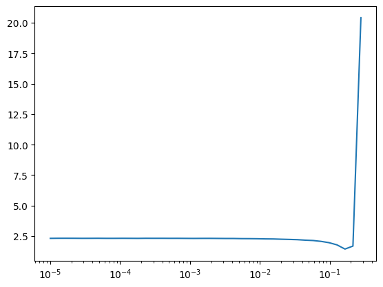</p>
</div>
</div>
<div class="cell" data-execution_count="73">
<div class="sourceCode cell-code" id="cb81"><pre class="sourceCode python code-with-copy"><code class="sourceCode python"><span id="cb81-1"><a href="#cb81-1" aria-hidden="true" tabindex="-1"></a>learn.fit(<span class="dv">3</span>)</span></code><button title="Copy to Clipboard" class="code-copy-button"><i class="bi"></i></button></pre></div>
<div class="cell-output cell-output-display">

<style>
    /* Turns off some styling */
    progress {
        /* gets rid of default border in Firefox and Opera. */
        border: none;
        /* Needs to be in here for Safari polyfill so background images work as expected. */
        background-size: auto;
    }
    progress:not([value]), progress:not([value])::-webkit-progress-bar {
        background: repeating-linear-gradient(45deg, #7e7e7e, #7e7e7e 10px, #5c5c5c 10px, #5c5c5c 20px);
    }
    .progress-bar-interrupted, .progress-bar-interrupted::-webkit-progress-bar {
        background: #F44336;
    }
</style>
</div>
<div class="cell-output cell-output-display">

    <div>
      <progress value="0" class="" max="3" style="width:300px; height:20px; vertical-align: middle;"></progress>
      0.00% [0/3 00:00&lt;?]
    </div>
    


    <div>
      <progress value="0" class="" max="59" style="width:300px; height:20px; vertical-align: middle;"></progress>
      0.00% [0/59 00:00&lt;?]
    </div>
    
</div>
<div class="cell-output cell-output-display">
<p>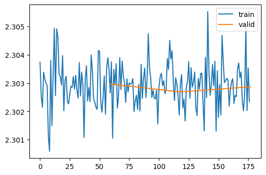</p>
</div>
</div>
<div class="cell" data-execution_count="67">
<div class="sourceCode cell-code" id="cb82"><pre class="sourceCode python code-with-copy"><code class="sourceCode python"><span id="cb82-1"><a href="#cb82-1" aria-hidden="true" tabindex="-1"></a>astats.color_dim()</span></code><button title="Copy to Clipboard" class="code-copy-button"><i class="bi"></i></button></pre></div>
<div class="cell-output cell-output-display">
<p></p>
</div>
</div>
<div class="cell" data-execution_count="68">
<div class="sourceCode cell-code" id="cb83"><pre class="sourceCode python code-with-copy"><code class="sourceCode python"><span id="cb83-1"><a href="#cb83-1" aria-hidden="true" tabindex="-1"></a>astats.plot_stats()</span></code><button title="Copy to Clipboard" class="code-copy-button"><i class="bi"></i></button></pre></div>
<div class="cell-output cell-output-display">
<p>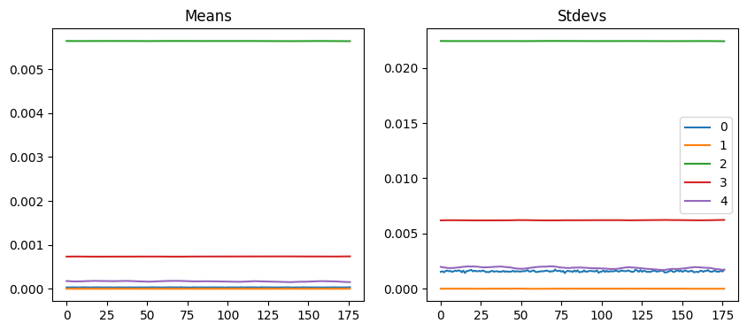</p>
</div>
</div>
</section>
</section>
<section id="input-normalization" class="level2">
<h2 class="anchored" data-anchor-id="input-normalization">Input normalization</h2>
<div class="cell" data-execution_count="56">
<div class="sourceCode cell-code" id="cb84"><pre class="sourceCode python code-with-copy"><code class="sourceCode python"><span id="cb84-1"><a href="#cb84-1" aria-hidden="true" tabindex="-1"></a>xmean,xstd <span class="op">=</span> xb.mean(),xb.std()</span>
<span id="cb84-2"><a href="#cb84-2" aria-hidden="true" tabindex="-1"></a>xmean,xstd</span></code><button title="Copy to Clipboard" class="code-copy-button"><i class="bi"></i></button></pre></div>
<div class="cell-output cell-output-display" data-execution_count="56">
<pre><code>(tensor(0.29), tensor(0.35))</code></pre>
</div>
</div>
<p>::: {.cell 0=‘e’ 1=‘x’ 2=‘p’ 3=‘o’ 4=‘r’ 5=‘t’ execution_count=57}</p>
<div class="sourceCode cell-code" id="cb86"><pre class="sourceCode python code-with-copy"><code class="sourceCode python"><span id="cb86-1"><a href="#cb86-1" aria-hidden="true" tabindex="-1"></a><span class="kw">class</span> BatchTransformCB(Callback):</span>
<span id="cb86-2"><a href="#cb86-2" aria-hidden="true" tabindex="-1"></a>    <span class="kw">def</span> <span class="fu">__init__</span>(<span class="va">self</span>, tfm, on_train<span class="op">=</span><span class="va">True</span>, on_val<span class="op">=</span><span class="va">True</span>): fc.store_attr()</span>
<span id="cb86-3"><a href="#cb86-3" aria-hidden="true" tabindex="-1"></a></span>
<span id="cb86-4"><a href="#cb86-4" aria-hidden="true" tabindex="-1"></a>    <span class="kw">def</span> before_batch(<span class="va">self</span>, learn):</span>
<span id="cb86-5"><a href="#cb86-5" aria-hidden="true" tabindex="-1"></a>        <span class="cf">if</span> (<span class="va">self</span>.on_train <span class="kw">and</span> learn.training) <span class="kw">or</span> (<span class="va">self</span>.on_val <span class="kw">and</span> <span class="kw">not</span> learn.training):</span>
<span id="cb86-6"><a href="#cb86-6" aria-hidden="true" tabindex="-1"></a>            learn.batch <span class="op">=</span> <span class="va">self</span>.tfm(learn.batch)</span></code><button title="Copy to Clipboard" class="code-copy-button"><i class="bi"></i></button></pre></div>
<p>:::</p>
<div class="cell" data-execution_count="58">
<div class="sourceCode cell-code" id="cb87"><pre class="sourceCode python code-with-copy"><code class="sourceCode python"><span id="cb87-1"><a href="#cb87-1" aria-hidden="true" tabindex="-1"></a><span class="kw">def</span> _norm(b): <span class="cf">return</span> (b[<span class="dv">0</span>]<span class="op">-</span>xmean)<span class="op">/</span>xstd,b[<span class="dv">1</span>]</span>
<span id="cb87-2"><a href="#cb87-2" aria-hidden="true" tabindex="-1"></a>norm <span class="op">=</span> BatchTransformCB(_norm)</span></code><button title="Copy to Clipboard" class="code-copy-button"><i class="bi"></i></button></pre></div>
</div>
<div class="cell" data-execution_count="59">
<div class="sourceCode cell-code" id="cb88"><pre class="sourceCode python code-with-copy"><code class="sourceCode python"><span id="cb88-1"><a href="#cb88-1" aria-hidden="true" tabindex="-1"></a>set_seed(<span class="dv">42</span>)</span>
<span id="cb88-2"><a href="#cb88-2" aria-hidden="true" tabindex="-1"></a>learn <span class="op">=</span> MomentumLearner(get_model().<span class="bu">apply</span>(init_weights), dls, F.cross_entropy, lr<span class="op">=</span><span class="fl">0.2</span>, cbs<span class="op">=</span>cbs<span class="op">+</span>[norm])</span>
<span id="cb88-3"><a href="#cb88-3" aria-hidden="true" tabindex="-1"></a>learn.fit(<span class="dv">3</span>)</span></code><button title="Copy to Clipboard" class="code-copy-button"><i class="bi"></i></button></pre></div>
<div class="cell-output cell-output-error">
<pre><code>NameError: name 'init_weights' is not defined</code></pre>
</div>
</div>
<div class="cell">
<div class="sourceCode cell-code" id="cb90"><pre class="sourceCode python code-with-copy"><code class="sourceCode python"><span id="cb90-1"><a href="#cb90-1" aria-hidden="true" tabindex="-1"></a>astats.color_dim()</span></code><button title="Copy to Clipboard" class="code-copy-button"><i class="bi"></i></button></pre></div>
<div class="cell-output cell-output-display">
<p>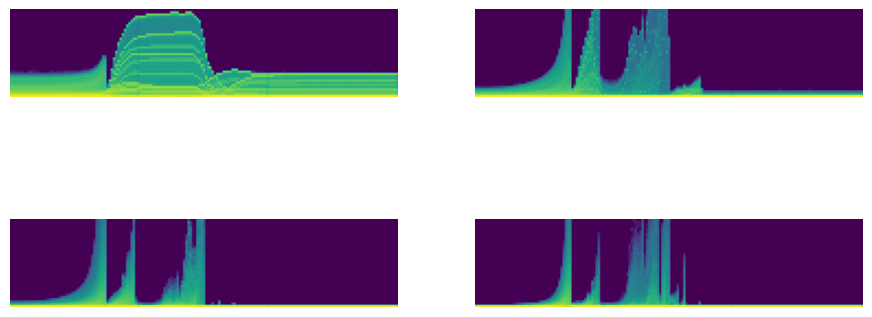</p>
</div>
</div>
<div class="cell">
<div class="sourceCode cell-code" id="cb91"><pre class="sourceCode python code-with-copy"><code class="sourceCode python"><span id="cb91-1"><a href="#cb91-1" aria-hidden="true" tabindex="-1"></a>astats.plot_stats()</span></code><button title="Copy to Clipboard" class="code-copy-button"><i class="bi"></i></button></pre></div>
<div class="cell-output cell-output-display">
<p>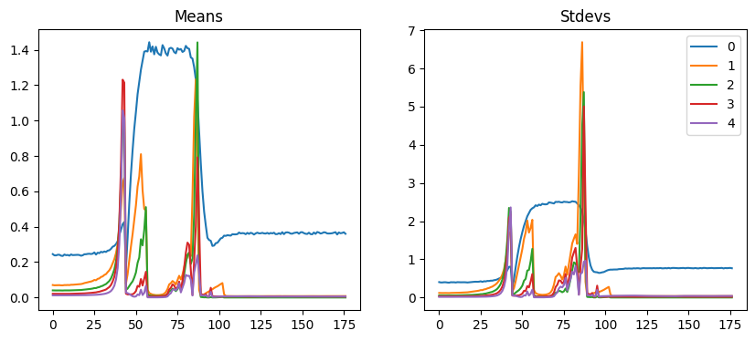</p>
</div>
</div>
<div class="cell">
<div class="sourceCode cell-code" id="cb92"><pre class="sourceCode python code-with-copy"><code class="sourceCode python"><span id="cb92-1"><a href="#cb92-1" aria-hidden="true" tabindex="-1"></a><span class="at">@inplace</span></span>
<span id="cb92-2"><a href="#cb92-2" aria-hidden="true" tabindex="-1"></a><span class="kw">def</span> transformi(b): b[xl] <span class="op">=</span> [(TF.to_tensor(o)<span class="op">-</span>xmean)<span class="op">/</span>xstd <span class="cf">for</span> o <span class="kw">in</span> b[xl]]</span>
<span id="cb92-3"><a href="#cb92-3" aria-hidden="true" tabindex="-1"></a>tds <span class="op">=</span> dsd.with_transform(transformi)</span>
<span id="cb92-4"><a href="#cb92-4" aria-hidden="true" tabindex="-1"></a>dls <span class="op">=</span> DataLoaders.from_dd(tds, bs, num_workers<span class="op">=</span><span class="dv">4</span>)</span>
<span id="cb92-5"><a href="#cb92-5" aria-hidden="true" tabindex="-1"></a>xb,yb <span class="op">=</span> <span class="bu">next</span>(<span class="bu">iter</span>(dls.train))</span></code><button title="Copy to Clipboard" class="code-copy-button"><i class="bi"></i></button></pre></div>
</div>
<div class="cell">
<div class="sourceCode cell-code" id="cb93"><pre class="sourceCode python code-with-copy"><code class="sourceCode python"><span id="cb93-1"><a href="#cb93-1" aria-hidden="true" tabindex="-1"></a>xb.mean(),xb.std()</span></code><button title="Copy to Clipboard" class="code-copy-button"><i class="bi"></i></button></pre></div>
<div class="cell-output cell-output-display" data-execution_count="62">
<pre><code>(tensor(-0.01), tensor(0.99))</code></pre>
</div>
</div>
</section>
<section id="general-relu" class="level2">
<h2 class="anchored" data-anchor-id="general-relu">General ReLU</h2>
<p>::: {.cell 0=‘e’ 1=‘x’ 2=‘p’ 3=‘o’ 4=‘r’ 5=‘t’}</p>
<div class="sourceCode cell-code" id="cb95"><pre class="sourceCode python code-with-copy"><code class="sourceCode python"><span id="cb95-1"><a href="#cb95-1" aria-hidden="true" tabindex="-1"></a><span class="kw">class</span> GeneralRelu(nn.Module):</span>
<span id="cb95-2"><a href="#cb95-2" aria-hidden="true" tabindex="-1"></a>    <span class="kw">def</span> <span class="fu">__init__</span>(<span class="va">self</span>, leak<span class="op">=</span><span class="va">None</span>, sub<span class="op">=</span><span class="va">None</span>, maxv<span class="op">=</span><span class="va">None</span>):</span>
<span id="cb95-3"><a href="#cb95-3" aria-hidden="true" tabindex="-1"></a>        <span class="bu">super</span>().<span class="fu">__init__</span>()</span>
<span id="cb95-4"><a href="#cb95-4" aria-hidden="true" tabindex="-1"></a>        <span class="va">self</span>.leak,<span class="va">self</span>.sub,<span class="va">self</span>.maxv <span class="op">=</span> leak,sub,maxv</span>
<span id="cb95-5"><a href="#cb95-5" aria-hidden="true" tabindex="-1"></a></span>
<span id="cb95-6"><a href="#cb95-6" aria-hidden="true" tabindex="-1"></a>    <span class="kw">def</span> forward(<span class="va">self</span>, x): </span>
<span id="cb95-7"><a href="#cb95-7" aria-hidden="true" tabindex="-1"></a>        x <span class="op">=</span> F.leaky_relu(x,<span class="va">self</span>.leak) <span class="cf">if</span> <span class="va">self</span>.leak <span class="kw">is</span> <span class="kw">not</span> <span class="va">None</span> <span class="cf">else</span> F.relu(x)</span>
<span id="cb95-8"><a href="#cb95-8" aria-hidden="true" tabindex="-1"></a>        <span class="cf">if</span> <span class="va">self</span>.sub <span class="kw">is</span> <span class="kw">not</span> <span class="va">None</span>: x <span class="op">-=</span> <span class="va">self</span>.sub</span>
<span id="cb95-9"><a href="#cb95-9" aria-hidden="true" tabindex="-1"></a>        <span class="cf">if</span> <span class="va">self</span>.maxv <span class="kw">is</span> <span class="kw">not</span> <span class="va">None</span>: x.clamp_max_(<span class="va">self</span>.maxv)</span>
<span id="cb95-10"><a href="#cb95-10" aria-hidden="true" tabindex="-1"></a>        <span class="cf">return</span> x</span></code><button title="Copy to Clipboard" class="code-copy-button"><i class="bi"></i></button></pre></div>
<p>:::</p>
<p>::: {.cell 0=‘e’ 1=‘x’ 2=‘p’ 3=‘o’ 4=‘r’ 5=‘t’}</p>
<div class="sourceCode cell-code" id="cb96"><pre class="sourceCode python code-with-copy"><code class="sourceCode python"><span id="cb96-1"><a href="#cb96-1" aria-hidden="true" tabindex="-1"></a><span class="kw">def</span> plot_func(f, start<span class="op">=-</span><span class="fl">5.</span>, end<span class="op">=</span><span class="fl">5.</span>, steps<span class="op">=</span><span class="dv">100</span>):</span>
<span id="cb96-2"><a href="#cb96-2" aria-hidden="true" tabindex="-1"></a>    x <span class="op">=</span> torch.linspace(start, end, steps)</span>
<span id="cb96-3"><a href="#cb96-3" aria-hidden="true" tabindex="-1"></a>    plt.plot(x, f(x))</span>
<span id="cb96-4"><a href="#cb96-4" aria-hidden="true" tabindex="-1"></a>    plt.grid(<span class="va">True</span>, which<span class="op">=</span><span class="st">'both'</span>, ls<span class="op">=</span><span class="st">'--'</span>)</span>
<span id="cb96-5"><a href="#cb96-5" aria-hidden="true" tabindex="-1"></a>    plt.axhline(y<span class="op">=</span><span class="dv">0</span>, color<span class="op">=</span><span class="st">'k'</span>, linewidth<span class="op">=</span><span class="fl">0.7</span>)</span>
<span id="cb96-6"><a href="#cb96-6" aria-hidden="true" tabindex="-1"></a>    plt.axvline(x<span class="op">=</span><span class="dv">0</span>, color<span class="op">=</span><span class="st">'k'</span>, linewidth<span class="op">=</span><span class="fl">0.7</span>)</span></code><button title="Copy to Clipboard" class="code-copy-button"><i class="bi"></i></button></pre></div>
<p>:::</p>
<div class="cell">
<div class="sourceCode cell-code" id="cb97"><pre class="sourceCode python code-with-copy"><code class="sourceCode python"><span id="cb97-1"><a href="#cb97-1" aria-hidden="true" tabindex="-1"></a>plot_func(GeneralRelu(leak<span class="op">=</span><span class="fl">0.1</span>, sub<span class="op">=</span><span class="fl">0.4</span>))</span></code><button title="Copy to Clipboard" class="code-copy-button"><i class="bi"></i></button></pre></div>
<div class="cell-output cell-output-display">
<p>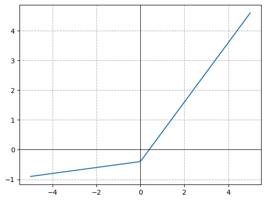</p>
</div>
</div>
<div class="cell">
<div class="sourceCode cell-code" id="cb98"><pre class="sourceCode python code-with-copy"><code class="sourceCode python"><span id="cb98-1"><a href="#cb98-1" aria-hidden="true" tabindex="-1"></a><span class="kw">def</span> conv(ni, nf, ks<span class="op">=</span><span class="dv">3</span>, stride<span class="op">=</span><span class="dv">2</span>, act<span class="op">=</span>nn.ReLU):</span>
<span id="cb98-2"><a href="#cb98-2" aria-hidden="true" tabindex="-1"></a>    res <span class="op">=</span> nn.Conv2d(ni, nf, stride<span class="op">=</span>stride, kernel_size<span class="op">=</span>ks, padding<span class="op">=</span>ks<span class="op">//</span><span class="dv">2</span>)</span>
<span id="cb98-3"><a href="#cb98-3" aria-hidden="true" tabindex="-1"></a>    <span class="cf">if</span> act: res <span class="op">=</span> nn.Sequential(res, act())</span>
<span id="cb98-4"><a href="#cb98-4" aria-hidden="true" tabindex="-1"></a>    <span class="cf">return</span> res</span></code><button title="Copy to Clipboard" class="code-copy-button"><i class="bi"></i></button></pre></div>
</div>
<div class="cell">
<div class="sourceCode cell-code" id="cb99"><pre class="sourceCode python code-with-copy"><code class="sourceCode python"><span id="cb99-1"><a href="#cb99-1" aria-hidden="true" tabindex="-1"></a><span class="kw">def</span> get_model(act<span class="op">=</span>nn.ReLU, nfs<span class="op">=</span><span class="va">None</span>):</span>
<span id="cb99-2"><a href="#cb99-2" aria-hidden="true" tabindex="-1"></a>    <span class="cf">if</span> nfs <span class="kw">is</span> <span class="va">None</span>: nfs <span class="op">=</span> [<span class="dv">1</span>,<span class="dv">8</span>,<span class="dv">16</span>,<span class="dv">32</span>,<span class="dv">64</span>]</span>
<span id="cb99-3"><a href="#cb99-3" aria-hidden="true" tabindex="-1"></a>    layers <span class="op">=</span> [conv(nfs[i], nfs[i<span class="op">+</span><span class="dv">1</span>], act<span class="op">=</span>act) <span class="cf">for</span> i <span class="kw">in</span> <span class="bu">range</span>(<span class="bu">len</span>(nfs)<span class="op">-</span><span class="dv">1</span>)]</span>
<span id="cb99-4"><a href="#cb99-4" aria-hidden="true" tabindex="-1"></a>    <span class="cf">return</span> nn.Sequential(<span class="op">*</span>layers, conv(nfs[<span class="op">-</span><span class="dv">1</span>],<span class="dv">10</span>, act<span class="op">=</span><span class="va">None</span>), nn.Flatten()).to(def_device)</span></code><button title="Copy to Clipboard" class="code-copy-button"><i class="bi"></i></button></pre></div>
</div>
<p>::: {.cell 0=‘e’ 1=‘x’ 2=‘p’ 3=‘o’ 4=‘r’ 5=‘t’}</p>
<div class="sourceCode cell-code" id="cb100"><pre class="sourceCode python code-with-copy"><code class="sourceCode python"><span id="cb100-1"><a href="#cb100-1" aria-hidden="true" tabindex="-1"></a><span class="kw">def</span> init_weights(m, leaky<span class="op">=</span><span class="fl">0.</span>):</span>
<span id="cb100-2"><a href="#cb100-2" aria-hidden="true" tabindex="-1"></a>    <span class="cf">if</span> <span class="bu">isinstance</span>(m, (nn.Conv1d,nn.Conv2d,nn.Conv3d)): LSUV_init(m.weight, a<span class="op">=</span>leaky)</span></code><button title="Copy to Clipboard" class="code-copy-button"><i class="bi"></i></button></pre></div>
<p>:::</p>
<div class="cell">
<div class="sourceCode cell-code" id="cb101"><pre class="sourceCode python code-with-copy"><code class="sourceCode python"><span id="cb101-1"><a href="#cb101-1" aria-hidden="true" tabindex="-1"></a>act_gr <span class="op">=</span> partial(GeneralRelu, leak<span class="op">=</span><span class="fl">0.1</span>, sub<span class="op">=</span><span class="fl">0.4</span>)</span>
<span id="cb101-2"><a href="#cb101-2" aria-hidden="true" tabindex="-1"></a>model <span class="op">=</span> get_model(act_gr)</span>
<span id="cb101-3"><a href="#cb101-3" aria-hidden="true" tabindex="-1"></a>astats <span class="op">=</span> ActivationStats(fc.risinstance(GeneralRelu))</span>
<span id="cb101-4"><a href="#cb101-4" aria-hidden="true" tabindex="-1"></a>cbs <span class="op">=</span> [DeviceCB(), LSUV(model), metrics,ProgressCB(plot<span class="op">=</span><span class="va">True</span>), astats]</span>
<span id="cb101-5"><a href="#cb101-5" aria-hidden="true" tabindex="-1"></a><span class="co">#iw = partial(init_weights, leaky=0.1)</span></span></code><button title="Copy to Clipboard" class="code-copy-button"><i class="bi"></i></button></pre></div>
</div>
<div class="cell">
<div class="sourceCode cell-code" id="cb102"><pre class="sourceCode python code-with-copy"><code class="sourceCode python"><span id="cb102-1"><a href="#cb102-1" aria-hidden="true" tabindex="-1"></a>set_seed(<span class="dv">42</span>)</span>
<span id="cb102-2"><a href="#cb102-2" aria-hidden="true" tabindex="-1"></a><span class="co"># learn = MomentumLearner(model, dls, F.cross_entropy, lr=0.2, cbs=cbs)</span></span>
<span id="cb102-3"><a href="#cb102-3" aria-hidden="true" tabindex="-1"></a>learn <span class="op">=</span> MomentumLearner(model, dls, F.cross_entropy, lr<span class="op">=</span><span class="fl">0.2</span>, cbs<span class="op">=</span>cbs)</span>
<span id="cb102-4"><a href="#cb102-4" aria-hidden="true" tabindex="-1"></a>learn.fit(<span class="dv">3</span>)</span></code><button title="Copy to Clipboard" class="code-copy-button"><i class="bi"></i></button></pre></div>
<div class="cell-output cell-output-display">

<style>
    /* Turns off some styling */
    progress {
        /* gets rid of default border in Firefox and Opera. */
        border: none;
        /* Needs to be in here for Safari polyfill so background images work as expected. */
        background-size: auto;
    }
    progress:not([value]), progress:not([value])::-webkit-progress-bar {
        background: repeating-linear-gradient(45deg, #7e7e7e, #7e7e7e 10px, #5c5c5c 10px, #5c5c5c 20px);
    }
    .progress-bar-interrupted, .progress-bar-interrupted::-webkit-progress-bar {
        background: #F44336;
    }
</style>
</div>
<div class="cell-output cell-output-display">

    <div>
      <progress value="0" class="" max="3" style="width:300px; height:20px; vertical-align: middle;"></progress>
      0.00% [0/3 00:00&lt;?]
    </div>
    


    <div>
      <progress value="0" class="" max="59" style="width:300px; height:20px; vertical-align: middle;"></progress>
      0.00% [0/59 00:00&lt;?]
    </div>
    
</div>
<div class="cell-output cell-output-display">
<p>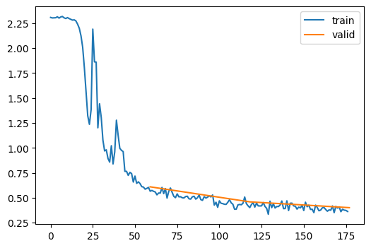</p>
</div>
</div>
<div class="cell">
<div class="sourceCode cell-code" id="cb103"><pre class="sourceCode python code-with-copy"><code class="sourceCode python"><span id="cb103-1"><a href="#cb103-1" aria-hidden="true" tabindex="-1"></a>astats.color_dim()</span></code><button title="Copy to Clipboard" class="code-copy-button"><i class="bi"></i></button></pre></div>
<div class="cell-output cell-output-display">
<p>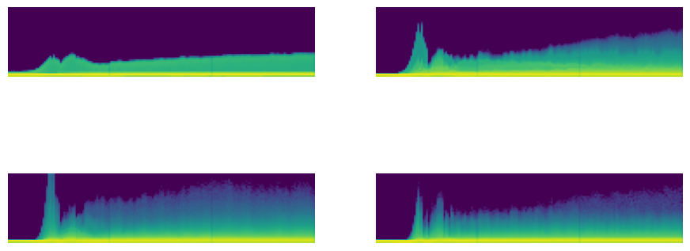</p>
</div>
</div>
<div class="cell">
<div class="sourceCode cell-code" id="cb104"><pre class="sourceCode python code-with-copy"><code class="sourceCode python"><span id="cb104-1"><a href="#cb104-1" aria-hidden="true" tabindex="-1"></a>astats.plot_stats()</span></code><button title="Copy to Clipboard" class="code-copy-button"><i class="bi"></i></button></pre></div>
<div class="cell-output cell-output-display">
<p>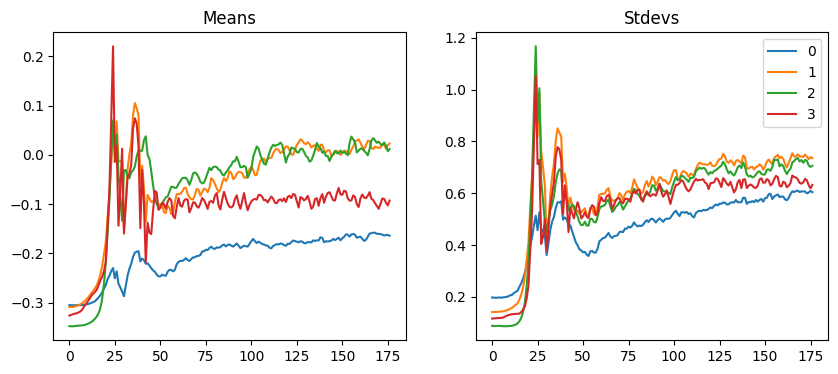</p>
</div>
</div>
<div class="cell">
<div class="sourceCode cell-code" id="cb105"><pre class="sourceCode python code-with-copy"><code class="sourceCode python"><span id="cb105-1"><a href="#cb105-1" aria-hidden="true" tabindex="-1"></a>astats.dead_chart()</span></code><button title="Copy to Clipboard" class="code-copy-button"><i class="bi"></i></button></pre></div>
<div class="cell-output cell-output-display">
<p>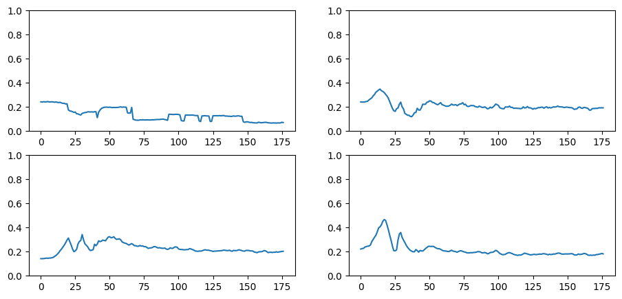</p>
</div>
</div>
</section>
<section id="lsuv" class="level2">
<h2 class="anchored" data-anchor-id="lsuv">LSUV</h2>
<p><a href="https://arxiv.org/pdf/1511.06422.pdf">All You Need is a Good Init</a> introduces <em>Layer-wise Sequential Unit-Variance</em> (<em>LSUV</em>).</p>
<div class="cell">
<div class="sourceCode cell-code" id="cb106"><pre class="sourceCode python code-with-copy"><code class="sourceCode python"><span id="cb106-1"><a href="#cb106-1" aria-hidden="true" tabindex="-1"></a><span class="kw">class</span> LSUF_CB(Callback):</span>
<span id="cb106-2"><a href="#cb106-2" aria-hidden="true" tabindex="-1"></a>    <span class="kw">def</span> <span class="fu">__init__</span>(<span class="va">self</span>, <span class="op">*</span>ms, <span class="op">**</span>metrics):</span>
<span id="cb106-3"><a href="#cb106-3" aria-hidden="true" tabindex="-1"></a>        <span class="cf">for</span> o <span class="kw">in</span> ms: metrics[<span class="bu">type</span>(o).<span class="va">__name__</span>] <span class="op">=</span> o</span>
<span id="cb106-4"><a href="#cb106-4" aria-hidden="true" tabindex="-1"></a>        <span class="va">self</span>.metrics <span class="op">=</span> metrics</span>
<span id="cb106-5"><a href="#cb106-5" aria-hidden="true" tabindex="-1"></a>        <span class="va">self</span>.all_metrics <span class="op">=</span> copy(metrics)</span>
<span id="cb106-6"><a href="#cb106-6" aria-hidden="true" tabindex="-1"></a>        <span class="va">self</span>.all_metrics[<span class="st">'loss'</span>] <span class="op">=</span> <span class="va">self</span>.loss <span class="op">=</span> Mean()</span>
<span id="cb106-7"><a href="#cb106-7" aria-hidden="true" tabindex="-1"></a></span>
<span id="cb106-8"><a href="#cb106-8" aria-hidden="true" tabindex="-1"></a>    <span class="kw">def</span> _log(<span class="va">self</span>, d): <span class="bu">print</span>(d)</span>
<span id="cb106-9"><a href="#cb106-9" aria-hidden="true" tabindex="-1"></a>    <span class="kw">def</span> before_fit(<span class="va">self</span>, learn): learn.metrics <span class="op">=</span> <span class="va">self</span></span>
<span id="cb106-10"><a href="#cb106-10" aria-hidden="true" tabindex="-1"></a>    <span class="kw">def</span> before_epoch(<span class="va">self</span>, learn): [o.reset() <span class="cf">for</span> o <span class="kw">in</span> <span class="va">self</span>.all_metrics.values()]</span>
<span id="cb106-11"><a href="#cb106-11" aria-hidden="true" tabindex="-1"></a></span>
<span id="cb106-12"><a href="#cb106-12" aria-hidden="true" tabindex="-1"></a>    <span class="kw">def</span> after_epoch(<span class="va">self</span>, learn):</span>
<span id="cb106-13"><a href="#cb106-13" aria-hidden="true" tabindex="-1"></a>        log <span class="op">=</span> {k:<span class="ss">f'</span><span class="sc">{</span>v<span class="sc">.</span>compute()<span class="sc">:.3f}</span><span class="ss">'</span> <span class="cf">for</span> k,v <span class="kw">in</span> <span class="va">self</span>.all_metrics.items()}</span>
<span id="cb106-14"><a href="#cb106-14" aria-hidden="true" tabindex="-1"></a>        log[<span class="st">'epoch'</span>] <span class="op">=</span> learn.epoch</span>
<span id="cb106-15"><a href="#cb106-15" aria-hidden="true" tabindex="-1"></a>        log[<span class="st">'train'</span>] <span class="op">=</span> <span class="st">'train'</span> <span class="cf">if</span> learn.model.training <span class="cf">else</span> <span class="st">'eval'</span></span>
<span id="cb106-16"><a href="#cb106-16" aria-hidden="true" tabindex="-1"></a>        <span class="va">self</span>._log(log)</span>
<span id="cb106-17"><a href="#cb106-17" aria-hidden="true" tabindex="-1"></a></span>
<span id="cb106-18"><a href="#cb106-18" aria-hidden="true" tabindex="-1"></a>    <span class="kw">def</span> after_batch(<span class="va">self</span>, learn):</span>
<span id="cb106-19"><a href="#cb106-19" aria-hidden="true" tabindex="-1"></a>        x,y,<span class="op">*</span>_ <span class="op">=</span> to_cpu(learn.batch)</span>
<span id="cb106-20"><a href="#cb106-20" aria-hidden="true" tabindex="-1"></a>        <span class="cf">for</span> m <span class="kw">in</span> <span class="va">self</span>.metrics.values(): m.update(to_cpu(learn.preds), y)</span>
<span id="cb106-21"><a href="#cb106-21" aria-hidden="true" tabindex="-1"></a>        <span class="va">self</span>.loss.update(to_cpu(learn.loss), weight<span class="op">=</span><span class="bu">len</span>(x))</span></code><button title="Copy to Clipboard" class="code-copy-button"><i class="bi"></i></button></pre></div>
</div>
<p>::: {.cell 0=‘e’ 1=‘x’ 2=‘p’ 3=‘o’ 4=‘r’ 5=‘t’}</p>
<div class="sourceCode cell-code" id="cb107"><pre class="sourceCode python code-with-copy"><code class="sourceCode python"><span id="cb107-1"><a href="#cb107-1" aria-hidden="true" tabindex="-1"></a><span class="co"># HW Callback for LSUV Initialization</span></span>
<span id="cb107-2"><a href="#cb107-2" aria-hidden="true" tabindex="-1"></a><span class="co"># Build the _lsuv_stats construct that will use the Hooks class to record the information from the neuron. </span></span>
<span id="cb107-3"><a href="#cb107-3" aria-hidden="true" tabindex="-1"></a><span class="kw">def</span> _lsuv_stats(hook, mod, inp, outp):</span>
<span id="cb107-4"><a href="#cb107-4" aria-hidden="true" tabindex="-1"></a>    acts <span class="op">=</span> to_cpu(outp) <span class="co"># output of each layer (neuron)</span></span>
<span id="cb107-5"><a href="#cb107-5" aria-hidden="true" tabindex="-1"></a>    hook.mean <span class="op">=</span> acts.mean() <span class="co"># Mean of each layer</span></span>
<span id="cb107-6"><a href="#cb107-6" aria-hidden="true" tabindex="-1"></a>    hook.std <span class="op">=</span> acts.std() <span class="co"># Std of each layer. </span></span>
<span id="cb107-7"><a href="#cb107-7" aria-hidden="true" tabindex="-1"></a></span>
<span id="cb107-8"><a href="#cb107-8" aria-hidden="true" tabindex="-1"></a><span class="kw">def</span> lsuv_init(model, m, m_in, xb):</span>
<span id="cb107-9"><a href="#cb107-9" aria-hidden="true" tabindex="-1"></a>    h <span class="op">=</span> Hook(m, _lsuv_stats) <span class="co"># Initialize the hook with the  </span></span>
<span id="cb107-10"><a href="#cb107-10" aria-hidden="true" tabindex="-1"></a>    <span class="cf">with</span> torch.no_grad(): </span>
<span id="cb107-11"><a href="#cb107-11" aria-hidden="true" tabindex="-1"></a>        <span class="co"># the LSUV initialization process involves modifying the weights and biases of </span></span>
<span id="cb107-12"><a href="#cb107-12" aria-hidden="true" tabindex="-1"></a>        <span class="co"># the neural network, which would otherwise cause gradients to accumulate during backpropagation</span></span>
<span id="cb107-13"><a href="#cb107-13" aria-hidden="true" tabindex="-1"></a>        <span class="cf">while</span> model(xb) <span class="kw">is</span> <span class="kw">not</span> <span class="va">None</span> <span class="kw">and</span> (<span class="bu">abs</span>(h.std<span class="op">-</span><span class="dv">1</span>)<span class="op">&gt;</span><span class="fl">1e-3</span> <span class="kw">or</span> <span class="bu">abs</span>(h.mean)<span class="op">&gt;</span><span class="fl">1e-3</span>):</span>
<span id="cb107-14"><a href="#cb107-14" aria-hidden="true" tabindex="-1"></a>            m_in.bias <span class="op">-=</span> h.mean </span>
<span id="cb107-15"><a href="#cb107-15" aria-hidden="true" tabindex="-1"></a>            m_in.weight.data <span class="op">/=</span> h.std <span class="co"># Divide weight matrix by the std. </span></span>
<span id="cb107-16"><a href="#cb107-16" aria-hidden="true" tabindex="-1"></a>    h.remove()</span></code><button title="Copy to Clipboard" class="code-copy-button"><i class="bi"></i></button></pre></div>
<p>:::</p>
<div class="cell">
<div class="sourceCode cell-code" id="cb108"><pre class="sourceCode python code-with-copy"><code class="sourceCode python"><span id="cb108-1"><a href="#cb108-1" aria-hidden="true" tabindex="-1"></a>model <span class="op">=</span> get_model(act_gr)</span>
<span id="cb108-2"><a href="#cb108-2" aria-hidden="true" tabindex="-1"></a>relus <span class="op">=</span> [o <span class="cf">for</span> o <span class="kw">in</span> model.modules() <span class="cf">if</span> <span class="bu">isinstance</span>(o, GeneralRelu)]</span>
<span id="cb108-3"><a href="#cb108-3" aria-hidden="true" tabindex="-1"></a>convs <span class="op">=</span> [o <span class="cf">for</span> o <span class="kw">in</span> model.modules() <span class="cf">if</span> <span class="bu">isinstance</span>(o, nn.Conv2d)]</span></code><button title="Copy to Clipboard" class="code-copy-button"><i class="bi"></i></button></pre></div>
</div>
<div class="cell">
<div class="sourceCode cell-code" id="cb109"><pre class="sourceCode python code-with-copy"><code class="sourceCode python"><span id="cb109-1"><a href="#cb109-1" aria-hidden="true" tabindex="-1"></a><span class="cf">for</span> ms <span class="kw">in</span> <span class="bu">zip</span>(relus,convs): <span class="bu">print</span>(ms) <span class="co"># create a list of module pairs</span></span></code><button title="Copy to Clipboard" class="code-copy-button"><i class="bi"></i></button></pre></div>
<div class="cell-output cell-output-stdout">
<pre><code>(GeneralRelu(), Conv2d(1, 8, kernel_size=(3, 3), stride=(2, 2), padding=(1, 1)))
(GeneralRelu(), Conv2d(8, 16, kernel_size=(3, 3), stride=(2, 2), padding=(1, 1)))
(GeneralRelu(), Conv2d(16, 32, kernel_size=(3, 3), stride=(2, 2), padding=(1, 1)))
(GeneralRelu(), Conv2d(32, 64, kernel_size=(3, 3), stride=(2, 2), padding=(1, 1)))</code></pre>
</div>
</div>
<div class="cell">
<div class="sourceCode cell-code" id="cb111"><pre class="sourceCode python code-with-copy"><code class="sourceCode python"><span id="cb111-1"><a href="#cb111-1" aria-hidden="true" tabindex="-1"></a><span class="cf">for</span> ms <span class="kw">in</span> <span class="bu">zip</span>(relus,convs): lsuv_init(model, <span class="op">*</span>ms, xb.to(def_device))</span></code><button title="Copy to Clipboard" class="code-copy-button"><i class="bi"></i></button></pre></div>
</div>
<div class="cell">
<div class="sourceCode cell-code" id="cb112"><pre class="sourceCode python code-with-copy"><code class="sourceCode python"><span id="cb112-1"><a href="#cb112-1" aria-hidden="true" tabindex="-1"></a>set_seed(<span class="dv">42</span>)</span>
<span id="cb112-2"><a href="#cb112-2" aria-hidden="true" tabindex="-1"></a>learn <span class="op">=</span> MomentumLearner(model, dls, F.cross_entropy, lr<span class="op">=</span><span class="fl">0.2</span>, cbs<span class="op">=</span>cbs)</span>
<span id="cb112-3"><a href="#cb112-3" aria-hidden="true" tabindex="-1"></a>learn.fit(<span class="dv">3</span>)</span></code><button title="Copy to Clipboard" class="code-copy-button"><i class="bi"></i></button></pre></div>
<div class="cell-output cell-output-display">

<style>
    /* Turns off some styling */
    progress {
        /* gets rid of default border in Firefox and Opera. */
        border: none;
        /* Needs to be in here for Safari polyfill so background images work as expected. */
        background-size: auto;
    }
    progress:not([value]), progress:not([value])::-webkit-progress-bar {
        background: repeating-linear-gradient(45deg, #7e7e7e, #7e7e7e 10px, #5c5c5c 10px, #5c5c5c 20px);
    }
    .progress-bar-interrupted, .progress-bar-interrupted::-webkit-progress-bar {
        background: #F44336;
    }
</style>
</div>
<div class="cell-output cell-output-display">
<table class="dataframe table table-sm table-striped small" data-quarto-postprocess="true" data-border="1">
<thead>
<tr class="header">
<th data-quarto-table-cell-role="th">accuracy</th>
<th data-quarto-table-cell-role="th">loss</th>
<th data-quarto-table-cell-role="th">epoch</th>
<th data-quarto-table-cell-role="th">train</th>
</tr>
</thead>
<tbody>
<tr class="odd">
<td>0.772</td>
<td>0.647</td>
<td>0</td>
<td>train</td>
</tr>
<tr class="even">
<td>0.833</td>
<td>0.453</td>
<td>0</td>
<td>eval</td>
</tr>
<tr class="odd">
<td>0.863</td>
<td>0.377</td>
<td>1</td>
<td>train</td>
</tr>
<tr class="even">
<td>0.854</td>
<td>0.396</td>
<td>1</td>
<td>eval</td>
</tr>
<tr class="odd">
<td>0.876</td>
<td>0.336</td>
<td>2</td>
<td>train</td>
</tr>
<tr class="even">
<td>0.856</td>
<td>0.381</td>
<td>2</td>
<td>eval</td>
</tr>
</tbody>
</table>
</div>
<div class="cell-output cell-output-display">
<p>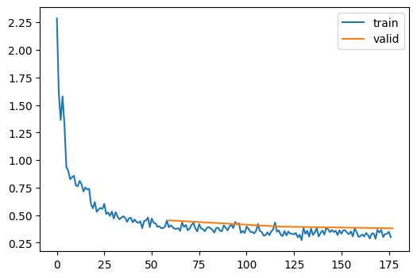</p>
</div>
</div>
<div class="cell">
<div class="sourceCode cell-code" id="cb113"><pre class="sourceCode python code-with-copy"><code class="sourceCode python"><span id="cb113-1"><a href="#cb113-1" aria-hidden="true" tabindex="-1"></a>astats.plot_stats()</span></code><button title="Copy to Clipboard" class="code-copy-button"><i class="bi"></i></button></pre></div>
<div class="cell-output cell-output-display">
<p>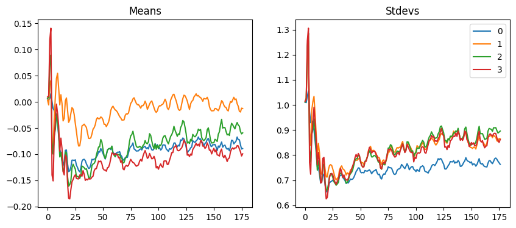</p>
</div>
</div>
</section>
<section id="batch-normalization" class="level2">
<h2 class="anchored" data-anchor-id="batch-normalization">Batch Normalization</h2>
<p>Sergey Ioffe and Christian Szegedy released <a href="https://arxiv.org/abs/1502.03167">“Batch Normalization: Accelerating Deep Network Training by Reducing Internal Covariate Shift”</a> in 2015, saying:</p>
<blockquote class="blockquote">
<p>Training Deep Neural Networks is complicated by the fact that the distribution of each layer’s inputs changes during training, as the parameters of the previous layers change. This slows down the training by requiring lower learning rates and careful parameter initialization… We refer to this phenomenon as internal covariate shift, and address the problem by normalizing layer inputs.</p>
</blockquote>
<p>Their proposal is:</p>
<blockquote class="blockquote">
<p>Making normalization a part of the model architecture and performing the normalization for each training mini-batch. Batch Normalization allows us to use much higher learning rates and be less careful about initialization.</p>
</blockquote>
<section id="layernorm" class="level3">
<h3 class="anchored" data-anchor-id="layernorm">LayerNorm</h3>
<p>We’ll start with <a href="https://arxiv.org/abs/1607.06450">layer normalization</a>, a simpler technique.</p>
<div class="cell">
<div class="sourceCode cell-code" id="cb114"><pre class="sourceCode python code-with-copy"><code class="sourceCode python"><span id="cb114-1"><a href="#cb114-1" aria-hidden="true" tabindex="-1"></a><span class="kw">class</span> LayerNorm(nn.Module):</span>
<span id="cb114-2"><a href="#cb114-2" aria-hidden="true" tabindex="-1"></a>    <span class="kw">def</span> <span class="fu">__init__</span>(<span class="va">self</span>, dummy, eps<span class="op">=</span><span class="fl">1e-5</span>):</span>
<span id="cb114-3"><a href="#cb114-3" aria-hidden="true" tabindex="-1"></a>        <span class="bu">super</span>().<span class="fu">__init__</span>()</span>
<span id="cb114-4"><a href="#cb114-4" aria-hidden="true" tabindex="-1"></a>        <span class="va">self</span>.eps <span class="op">=</span> eps</span>
<span id="cb114-5"><a href="#cb114-5" aria-hidden="true" tabindex="-1"></a>        <span class="va">self</span>.mult <span class="op">=</span> nn.Parameter(tensor(<span class="fl">1.</span>))</span>
<span id="cb114-6"><a href="#cb114-6" aria-hidden="true" tabindex="-1"></a>        <span class="va">self</span>.add  <span class="op">=</span> nn.Parameter(tensor(<span class="fl">0.</span>))</span>
<span id="cb114-7"><a href="#cb114-7" aria-hidden="true" tabindex="-1"></a></span>
<span id="cb114-8"><a href="#cb114-8" aria-hidden="true" tabindex="-1"></a>    <span class="kw">def</span> forward(<span class="va">self</span>, x):</span>
<span id="cb114-9"><a href="#cb114-9" aria-hidden="true" tabindex="-1"></a>        m <span class="op">=</span> x.mean((<span class="dv">1</span>,<span class="dv">2</span>,<span class="dv">3</span>), keepdim<span class="op">=</span><span class="va">True</span>) <span class="co"># NCHW we're recording the mean of Channel, Height, and Width</span></span>
<span id="cb114-10"><a href="#cb114-10" aria-hidden="true" tabindex="-1"></a>        v <span class="op">=</span> x.var ((<span class="dv">1</span>,<span class="dv">2</span>,<span class="dv">3</span>), keepdim<span class="op">=</span><span class="va">True</span>)</span>
<span id="cb114-11"><a href="#cb114-11" aria-hidden="true" tabindex="-1"></a>        x <span class="op">=</span> (x<span class="op">-</span>m) <span class="op">/</span> ((v<span class="op">+</span><span class="va">self</span>.eps).sqrt()) <span class="co"># Normalize the layer(neuron) by subtracting the mean and dividing</span></span>
<span id="cb114-12"><a href="#cb114-12" aria-hidden="true" tabindex="-1"></a>                                          <span class="co"># by the STD also known as the square root of the variance. We add</span></span>
<span id="cb114-13"><a href="#cb114-13" aria-hidden="true" tabindex="-1"></a>                                          <span class="co"># a small epsilon in case the variance is zero. </span></span>
<span id="cb114-14"><a href="#cb114-14" aria-hidden="true" tabindex="-1"></a>        <span class="cf">return</span> x<span class="op">*</span><span class="va">self</span>.mult <span class="op">+</span> <span class="va">self</span>.add <span class="co"># return </span></span></code><button title="Copy to Clipboard" class="code-copy-button"><i class="bi"></i></button></pre></div>
</div>
<p>::: {.cell 0=‘e’ 1=‘x’ 2=‘p’ 3=‘o’ 4=‘r’ 5=‘t’}</p>
<div class="sourceCode cell-code" id="cb115"><pre class="sourceCode python code-with-copy"><code class="sourceCode python"><span id="cb115-1"><a href="#cb115-1" aria-hidden="true" tabindex="-1"></a><span class="kw">def</span> conv(ni, nf, ks<span class="op">=</span><span class="dv">3</span>, stride<span class="op">=</span><span class="dv">2</span>, act<span class="op">=</span>nn.ReLU, norm<span class="op">=</span><span class="va">None</span>, bias<span class="op">=</span><span class="va">None</span>):</span>
<span id="cb115-2"><a href="#cb115-2" aria-hidden="true" tabindex="-1"></a>    <span class="cf">if</span> bias <span class="kw">is</span> <span class="va">None</span>: bias <span class="op">=</span> <span class="kw">not</span> <span class="bu">isinstance</span>(norm, (nn.BatchNorm1d,nn.BatchNorm2d,nn.BatchNorm3d))</span>
<span id="cb115-3"><a href="#cb115-3" aria-hidden="true" tabindex="-1"></a>    layers <span class="op">=</span> [nn.Conv2d(ni, nf, stride<span class="op">=</span>stride, kernel_size<span class="op">=</span>ks, padding<span class="op">=</span>ks<span class="op">//</span><span class="dv">2</span>, bias<span class="op">=</span>bias)]</span>
<span id="cb115-4"><a href="#cb115-4" aria-hidden="true" tabindex="-1"></a>    <span class="cf">if</span> norm: layers.append(norm(nf))</span>
<span id="cb115-5"><a href="#cb115-5" aria-hidden="true" tabindex="-1"></a>    <span class="cf">if</span> act: layers.append(act())</span>
<span id="cb115-6"><a href="#cb115-6" aria-hidden="true" tabindex="-1"></a>    <span class="cf">return</span> nn.Sequential(<span class="op">*</span>layers)</span></code><button title="Copy to Clipboard" class="code-copy-button"><i class="bi"></i></button></pre></div>
<p>:::</p>
<p>::: {.cell 0=‘e’ 1=‘x’ 2=‘p’ 3=‘o’ 4=‘r’ 5=‘t’}</p>
<div class="sourceCode cell-code" id="cb116"><pre class="sourceCode python code-with-copy"><code class="sourceCode python"><span id="cb116-1"><a href="#cb116-1" aria-hidden="true" tabindex="-1"></a><span class="kw">def</span> get_model(act<span class="op">=</span>nn.ReLU, nfs<span class="op">=</span><span class="va">None</span>, norm<span class="op">=</span><span class="va">None</span>):</span>
<span id="cb116-2"><a href="#cb116-2" aria-hidden="true" tabindex="-1"></a>    <span class="cf">if</span> nfs <span class="kw">is</span> <span class="va">None</span>: nfs <span class="op">=</span> [<span class="dv">1</span>,<span class="dv">8</span>,<span class="dv">16</span>,<span class="dv">32</span>,<span class="dv">64</span>]</span>
<span id="cb116-3"><a href="#cb116-3" aria-hidden="true" tabindex="-1"></a>    layers <span class="op">=</span> [conv(nfs[i], nfs[i<span class="op">+</span><span class="dv">1</span>], act<span class="op">=</span>act, norm<span class="op">=</span>norm) <span class="cf">for</span> i <span class="kw">in</span> <span class="bu">range</span>(<span class="bu">len</span>(nfs)<span class="op">-</span><span class="dv">1</span>)]</span>
<span id="cb116-4"><a href="#cb116-4" aria-hidden="true" tabindex="-1"></a>    <span class="cf">return</span> nn.Sequential(<span class="op">*</span>layers, conv(nfs[<span class="op">-</span><span class="dv">1</span>],<span class="dv">10</span>, act<span class="op">=</span><span class="va">None</span>, norm<span class="op">=</span><span class="va">False</span>, bias<span class="op">=</span><span class="va">True</span>),</span>
<span id="cb116-5"><a href="#cb116-5" aria-hidden="true" tabindex="-1"></a>                         nn.Flatten()).to(def_device)</span></code><button title="Copy to Clipboard" class="code-copy-button"><i class="bi"></i></button></pre></div>
<p>:::</p>
<div class="cell">
<div class="sourceCode cell-code" id="cb117"><pre class="sourceCode python code-with-copy"><code class="sourceCode python"><span id="cb117-1"><a href="#cb117-1" aria-hidden="true" tabindex="-1"></a>set_seed(<span class="dv">42</span>)</span>
<span id="cb117-2"><a href="#cb117-2" aria-hidden="true" tabindex="-1"></a>model <span class="op">=</span> get_model(act_gr, norm<span class="op">=</span>LayerNorm).<span class="bu">apply</span>(iw)</span>
<span id="cb117-3"><a href="#cb117-3" aria-hidden="true" tabindex="-1"></a>learn <span class="op">=</span> MomentumLearner(model, dls, F.cross_entropy, lr<span class="op">=</span><span class="fl">0.2</span>, cbs<span class="op">=</span>cbs)</span>
<span id="cb117-4"><a href="#cb117-4" aria-hidden="true" tabindex="-1"></a>learn.fit(<span class="dv">3</span>)</span></code><button title="Copy to Clipboard" class="code-copy-button"><i class="bi"></i></button></pre></div>
<div class="cell-output cell-output-display">

<style>
    /* Turns off some styling */
    progress {
        /* gets rid of default border in Firefox and Opera. */
        border: none;
        /* Needs to be in here for Safari polyfill so background images work as expected. */
        background-size: auto;
    }
    progress:not([value]), progress:not([value])::-webkit-progress-bar {
        background: repeating-linear-gradient(45deg, #7e7e7e, #7e7e7e 10px, #5c5c5c 10px, #5c5c5c 20px);
    }
    .progress-bar-interrupted, .progress-bar-interrupted::-webkit-progress-bar {
        background: #F44336;
    }
</style>
</div>
<div class="cell-output cell-output-display">

    <div>
      <progress value="0" class="" max="3" style="width:300px; height:20px; vertical-align: middle;"></progress>
      0.00% [0/3 00:00&lt;?]
    </div>
    


    <div>
      <progress value="0" class="" max="59" style="width:300px; height:20px; vertical-align: middle;"></progress>
      0.00% [0/59 00:00&lt;?]
    </div>
    
</div>
<div class="cell-output cell-output-display">
<p>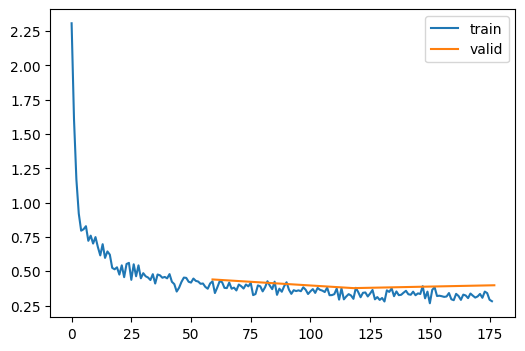</p>
</div>
</div>
</section>
<section id="batchnorm" class="level3">
<h3 class="anchored" data-anchor-id="batchnorm">BatchNorm</h3>
<div class="cell">
<div class="sourceCode cell-code" id="cb118"><pre class="sourceCode python code-with-copy"><code class="sourceCode python"><span id="cb118-1"><a href="#cb118-1" aria-hidden="true" tabindex="-1"></a><span class="kw">class</span> BatchNorm(nn.Module):</span>
<span id="cb118-2"><a href="#cb118-2" aria-hidden="true" tabindex="-1"></a>    <span class="kw">def</span> <span class="fu">__init__</span>(<span class="va">self</span>, nf, mom<span class="op">=</span><span class="fl">0.1</span>, eps<span class="op">=</span><span class="fl">1e-5</span>):</span>
<span id="cb118-3"><a href="#cb118-3" aria-hidden="true" tabindex="-1"></a>        <span class="bu">super</span>().<span class="fu">__init__</span>()</span>
<span id="cb118-4"><a href="#cb118-4" aria-hidden="true" tabindex="-1"></a>        <span class="co"># nf - number of filters </span></span>
<span id="cb118-5"><a href="#cb118-5" aria-hidden="true" tabindex="-1"></a>        <span class="va">self</span>.mom,<span class="va">self</span>.eps <span class="op">=</span> mom,eps</span>
<span id="cb118-6"><a href="#cb118-6" aria-hidden="true" tabindex="-1"></a>        <span class="va">self</span>.mults <span class="op">=</span> nn.Parameter(torch.ones (nf,<span class="dv">1</span>,<span class="dv">1</span>))</span>
<span id="cb118-7"><a href="#cb118-7" aria-hidden="true" tabindex="-1"></a>        <span class="va">self</span>.adds  <span class="op">=</span> nn.Parameter(torch.zeros(nf,<span class="dv">1</span>,<span class="dv">1</span>))</span>
<span id="cb118-8"><a href="#cb118-8" aria-hidden="true" tabindex="-1"></a>        <span class="va">self</span>.register_buffer(<span class="st">'vars'</span>,  torch.ones(<span class="dv">1</span>,nf,<span class="dv">1</span>,<span class="dv">1</span>)) <span class="co"># </span></span>
<span id="cb118-9"><a href="#cb118-9" aria-hidden="true" tabindex="-1"></a>        <span class="va">self</span>.register_buffer(<span class="st">'means'</span>, torch.zeros(<span class="dv">1</span>,nf,<span class="dv">1</span>,<span class="dv">1</span>))</span>
<span id="cb118-10"><a href="#cb118-10" aria-hidden="true" tabindex="-1"></a></span>
<span id="cb118-11"><a href="#cb118-11" aria-hidden="true" tabindex="-1"></a>    <span class="kw">def</span> update_stats(<span class="va">self</span>, x):</span>
<span id="cb118-12"><a href="#cb118-12" aria-hidden="true" tabindex="-1"></a>        m <span class="op">=</span> x.mean((<span class="dv">0</span>,<span class="dv">2</span>,<span class="dv">3</span>), keepdim<span class="op">=</span><span class="va">True</span>) <span class="co"># mean over batch, width, and height dimensions</span></span>
<span id="cb118-13"><a href="#cb118-13" aria-hidden="true" tabindex="-1"></a>        v <span class="op">=</span> x.var ((<span class="dv">0</span>,<span class="dv">2</span>,<span class="dv">3</span>), keepdim<span class="op">=</span><span class="va">True</span>) <span class="co"># std over batch, width, and height dimensions</span></span>
<span id="cb118-14"><a href="#cb118-14" aria-hidden="true" tabindex="-1"></a>        <span class="va">self</span>.means.lerp_(m, <span class="va">self</span>.mom) <span class="co"># returns (self.means - m)/self.mom, mom for momentum</span></span>
<span id="cb118-15"><a href="#cb118-15" aria-hidden="true" tabindex="-1"></a>        <span class="va">self</span>.<span class="bu">vars</span>.lerp_ (v, <span class="va">self</span>.mom) <span class="co"># reuturns (self.vars - v)/self.mom</span></span>
<span id="cb118-16"><a href="#cb118-16" aria-hidden="true" tabindex="-1"></a>        <span class="cf">return</span> m,v</span>
<span id="cb118-17"><a href="#cb118-17" aria-hidden="true" tabindex="-1"></a>        </span>
<span id="cb118-18"><a href="#cb118-18" aria-hidden="true" tabindex="-1"></a>    <span class="kw">def</span> forward(<span class="va">self</span>, x):</span>
<span id="cb118-19"><a href="#cb118-19" aria-hidden="true" tabindex="-1"></a>        <span class="cf">if</span> <span class="va">self</span>.training:</span>
<span id="cb118-20"><a href="#cb118-20" aria-hidden="true" tabindex="-1"></a>            <span class="cf">with</span> torch.no_grad(): m,v <span class="op">=</span> <span class="va">self</span>.update_stats(x)</span>
<span id="cb118-21"><a href="#cb118-21" aria-hidden="true" tabindex="-1"></a>        <span class="cf">else</span>: m,v <span class="op">=</span> <span class="va">self</span>.means,<span class="va">self</span>.<span class="bu">vars</span></span>
<span id="cb118-22"><a href="#cb118-22" aria-hidden="true" tabindex="-1"></a>        x <span class="op">=</span> (x<span class="op">-</span>m) <span class="op">/</span> (v<span class="op">+</span><span class="va">self</span>.eps).sqrt()</span>
<span id="cb118-23"><a href="#cb118-23" aria-hidden="true" tabindex="-1"></a>        <span class="cf">return</span> x<span class="op">*</span><span class="va">self</span>.mults <span class="op">+</span> <span class="va">self</span>.adds</span></code><button title="Copy to Clipboard" class="code-copy-button"><i class="bi"></i></button></pre></div>
</div>
<div class="cell">
<div class="sourceCode cell-code" id="cb119"><pre class="sourceCode python code-with-copy"><code class="sourceCode python"><span id="cb119-1"><a href="#cb119-1" aria-hidden="true" tabindex="-1"></a>model <span class="op">=</span> get_model(act_gr, norm<span class="op">=</span>BatchNorm).<span class="bu">apply</span>(iw)</span>
<span id="cb119-2"><a href="#cb119-2" aria-hidden="true" tabindex="-1"></a>set_seed(<span class="dv">42</span>)</span>
<span id="cb119-3"><a href="#cb119-3" aria-hidden="true" tabindex="-1"></a>learn <span class="op">=</span> MomentumLearner(model, dls, F.cross_entropy, lr<span class="op">=</span><span class="fl">0.4</span>, cbs<span class="op">=</span>cbs)</span>
<span id="cb119-4"><a href="#cb119-4" aria-hidden="true" tabindex="-1"></a>learn.fit(<span class="dv">3</span>)</span></code><button title="Copy to Clipboard" class="code-copy-button"><i class="bi"></i></button></pre></div>
<div class="cell-output cell-output-display">

<style>
    /* Turns off some styling */
    progress {
        /* gets rid of default border in Firefox and Opera. */
        border: none;
        /* Needs to be in here for Safari polyfill so background images work as expected. */
        background-size: auto;
    }
    progress:not([value]), progress:not([value])::-webkit-progress-bar {
        background: repeating-linear-gradient(45deg, #7e7e7e, #7e7e7e 10px, #5c5c5c 10px, #5c5c5c 20px);
    }
    .progress-bar-interrupted, .progress-bar-interrupted::-webkit-progress-bar {
        background: #F44336;
    }
</style>
</div>
<div class="cell-output cell-output-display">
<table class="dataframe table table-sm table-striped small" data-quarto-postprocess="true" data-border="1">
<thead>
<tr class="header">
<th data-quarto-table-cell-role="th">accuracy</th>
<th data-quarto-table-cell-role="th">loss</th>
<th data-quarto-table-cell-role="th">epoch</th>
<th data-quarto-table-cell-role="th">train</th>
</tr>
</thead>
<tbody>
<tr class="odd">
<td>0.793</td>
<td>0.571</td>
<td>0</td>
<td>train</td>
</tr>
<tr class="even">
<td>0.843</td>
<td>0.453</td>
<td>0</td>
<td>eval</td>
</tr>
<tr class="odd">
<td>0.872</td>
<td>0.345</td>
<td>1</td>
<td>train</td>
</tr>
<tr class="even">
<td>0.864</td>
<td>0.367</td>
<td>1</td>
<td>eval</td>
</tr>
<tr class="odd">
<td>0.885</td>
<td>0.310</td>
<td>2</td>
<td>train</td>
</tr>
<tr class="even">
<td>0.874</td>
<td>0.335</td>
<td>2</td>
<td>eval</td>
</tr>
</tbody>
</table>
</div>
<div class="cell-output cell-output-display">
<p>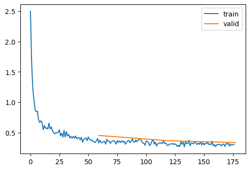</p>
</div>
</div>
<div class="quarto-figure quarto-figure-center">
<figure class="figure">
<p></p>
<figcaption class="figure-caption">Various norms</figcaption>
</figure>
</div>
</section>
</section>
<section id="towards-90" class="level2">
<h2 class="anchored" data-anchor-id="towards-90">Towards 90%…</h2>
<div class="cell">
<div class="sourceCode cell-code" id="cb120"><pre class="sourceCode python code-with-copy"><code class="sourceCode python"><span id="cb120-1"><a href="#cb120-1" aria-hidden="true" tabindex="-1"></a>dls <span class="op">=</span> DataLoaders.from_dd(tds, <span class="dv">256</span>, num_workers<span class="op">=</span><span class="dv">4</span>)</span></code><button title="Copy to Clipboard" class="code-copy-button"><i class="bi"></i></button></pre></div>
</div>
<div class="cell">
<div class="sourceCode cell-code" id="cb121"><pre class="sourceCode python code-with-copy"><code class="sourceCode python"><span id="cb121-1"><a href="#cb121-1" aria-hidden="true" tabindex="-1"></a>set_seed(<span class="dv">42</span>)</span>
<span id="cb121-2"><a href="#cb121-2" aria-hidden="true" tabindex="-1"></a>model <span class="op">=</span> get_model(act_gr, norm<span class="op">=</span>nn.BatchNorm2d).<span class="bu">apply</span>(iw)</span>
<span id="cb121-3"><a href="#cb121-3" aria-hidden="true" tabindex="-1"></a>learn <span class="op">=</span> MomentumLearner(model, dls, F.cross_entropy, lr<span class="op">=</span><span class="fl">0.2</span>, cbs<span class="op">=</span>cbs)</span>
<span id="cb121-4"><a href="#cb121-4" aria-hidden="true" tabindex="-1"></a>learn.fit(<span class="dv">3</span>)</span></code><button title="Copy to Clipboard" class="code-copy-button"><i class="bi"></i></button></pre></div>
<div class="cell-output cell-output-display">

<style>
    /* Turns off some styling */
    progress {
        /* gets rid of default border in Firefox and Opera. */
        border: none;
        /* Needs to be in here for Safari polyfill so background images work as expected. */
        background-size: auto;
    }
    progress:not([value]), progress:not([value])::-webkit-progress-bar {
        background: repeating-linear-gradient(45deg, #7e7e7e, #7e7e7e 10px, #5c5c5c 10px, #5c5c5c 20px);
    }
    .progress-bar-interrupted, .progress-bar-interrupted::-webkit-progress-bar {
        background: #F44336;
    }
</style>
</div>
<div class="cell-output cell-output-display">

    <div>
      <progress value="0" class="" max="3" style="width:300px; height:20px; vertical-align: middle;"></progress>
      0.00% [0/3 00:00&lt;?]
    </div>
    


    <div>
      <progress value="1" class="" max="235" style="width:300px; height:20px; vertical-align: middle;"></progress>
      0.43% [1/235 00:00&lt;03:11 2.235]
    </div>
    
</div>
<div class="cell-output cell-output-display">
<p>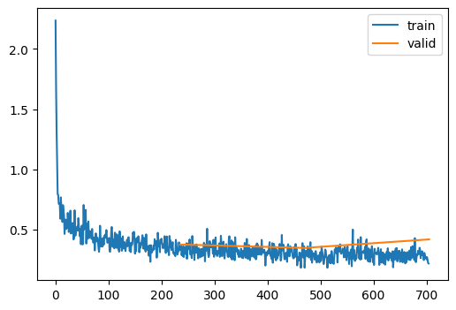</p>
</div>
</div>
<div class="cell">
<div class="sourceCode cell-code" id="cb122"><pre class="sourceCode python code-with-copy"><code class="sourceCode python"><span id="cb122-1"><a href="#cb122-1" aria-hidden="true" tabindex="-1"></a>learn <span class="op">=</span> MomentumLearner(model, dls, F.cross_entropy, lr<span class="op">=</span><span class="fl">0.05</span>, cbs<span class="op">=</span>cbs)</span>
<span id="cb122-2"><a href="#cb122-2" aria-hidden="true" tabindex="-1"></a>learn.fit(<span class="dv">2</span>)</span></code><button title="Copy to Clipboard" class="code-copy-button"><i class="bi"></i></button></pre></div>
<div class="cell-output cell-output-display">

<style>
    /* Turns off some styling */
    progress {
        /* gets rid of default border in Firefox and Opera. */
        border: none;
        /* Needs to be in here for Safari polyfill so background images work as expected. */
        background-size: auto;
    }
    progress:not([value]), progress:not([value])::-webkit-progress-bar {
        background: repeating-linear-gradient(45deg, #7e7e7e, #7e7e7e 10px, #5c5c5c 10px, #5c5c5c 20px);
    }
    .progress-bar-interrupted, .progress-bar-interrupted::-webkit-progress-bar {
        background: #F44336;
    }
</style>
</div>
<div class="cell-output cell-output-display">

    <div>
      <progress value="0" class="" max="2" style="width:300px; height:20px; vertical-align: middle;"></progress>
      0.00% [0/2 00:00&lt;?]
    </div>
    


    <div>
      <progress value="0" class="" max="235" style="width:300px; height:20px; vertical-align: middle;"></progress>
      0.00% [0/235 00:00&lt;?]
    </div>
    
</div>
<div class="cell-output cell-output-display">
<p>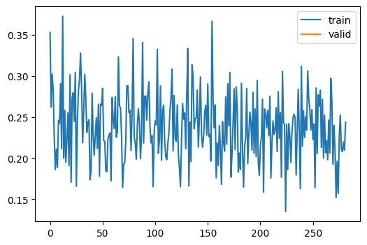</p>
</div>
</div>
</section>
<section id="export--" class="level2">
<h2 class="anchored" data-anchor-id="export--">Export -</h2>
<div class="cell">
<div class="sourceCode cell-code" id="cb123"><pre class="sourceCode python code-with-copy"><code class="sourceCode python"><span id="cb123-1"><a href="#cb123-1" aria-hidden="true" tabindex="-1"></a><span class="im">import</span> nbdev<span class="op">;</span> nbdev.nbdev_export()</span></code><button title="Copy to Clipboard" class="code-copy-button"><i class="bi"></i></button></pre></div>
<div class="cell-output cell-output-error">
<pre><code>ModuleNotFoundError: No module named 'nbdev'</code></pre>
</div>
</div>


</section>
</section>

</main> <!-- /main -->
<script id="quarto-html-after-body" type="application/javascript">
window.document.addEventListener("DOMContentLoaded", function (event) {
  const toggleBodyColorMode = (bsSheetEl) => {
    const mode = bsSheetEl.getAttribute("data-mode");
    const bodyEl = window.document.querySelector("body");
    if (mode === "dark") {
      bodyEl.classList.add("quarto-dark");
      bodyEl.classList.remove("quarto-light");
    } else {
      bodyEl.classList.add("quarto-light");
      bodyEl.classList.remove("quarto-dark");
    }
  }
  const toggleBodyColorPrimary = () => {
    const bsSheetEl = window.document.querySelector("link#quarto-bootstrap");
    if (bsSheetEl) {
      toggleBodyColorMode(bsSheetEl);
    }
  }
  toggleBodyColorPrimary();  
  const icon = "";
  const anchorJS = new window.AnchorJS();
  anchorJS.options = {
    placement: 'right',
    icon: icon
  };
  anchorJS.add('.anchored');
  const isCodeAnnotation = (el) => {
    for (const clz of el.classList) {
      if (clz.startsWith('code-annotation-')) {                     
        return true;
      }
    }
    return false;
  }
  const clipboard = new window.ClipboardJS('.code-copy-button', {
    text: function(trigger) {
      const codeEl = trigger.previousElementSibling.cloneNode(true);
      for (const childEl of codeEl.children) {
        if (isCodeAnnotation(childEl)) {
          childEl.remove();
        }
      }
      return codeEl.innerText;
    }
  });
  clipboard.on('success', function(e) {
    // button target
    const button = e.trigger;
    // don't keep focus
    button.blur();
    // flash "checked"
    button.classList.add('code-copy-button-checked');
    var currentTitle = button.getAttribute("title");
    button.setAttribute("title", "Copied!");
    let tooltip;
    if (window.bootstrap) {
      button.setAttribute("data-bs-toggle", "tooltip");
      button.setAttribute("data-bs-placement", "left");
      button.setAttribute("data-bs-title", "Copied!");
      tooltip = new bootstrap.Tooltip(button, 
        { trigger: "manual", 
          customClass: "code-copy-button-tooltip",
          offset: [0, -8]});
      tooltip.show();    
    }
    setTimeout(function() {
      if (tooltip) {
        tooltip.hide();
        button.removeAttribute("data-bs-title");
        button.removeAttribute("data-bs-toggle");
        button.removeAttribute("data-bs-placement");
      }
      button.setAttribute("title", currentTitle);
      button.classList.remove('code-copy-button-checked');
    }, 1000);
    // clear code selection
    e.clearSelection();
  });
  function tippyHover(el, contentFn) {
    const config = {
      allowHTML: true,
      content: contentFn,
      maxWidth: 500,
      delay: 100,
      arrow: false,
      appendTo: function(el) {
          return el.parentElement;
      },
      interactive: true,
      interactiveBorder: 10,
      theme: 'quarto',
      placement: 'bottom-start'
    };
    window.tippy(el, config); 
  }
  const noterefs = window.document.querySelectorAll('a[role="doc-noteref"]');
  for (var i=0; i<noterefs.length; i++) {
    const ref = noterefs[i];
    tippyHover(ref, function() {
      // use id or data attribute instead here
      let href = ref.getAttribute('data-footnote-href') || ref.getAttribute('href');
      try { href = new URL(href).hash; } catch {}
      const id = href.replace(/^#\/?/, "");
      const note = window.document.getElementById(id);
      return note.innerHTML;
    });
  }
      let selectedAnnoteEl;
      const selectorForAnnotation = ( cell, annotation) => {
        let cellAttr = 'data-code-cell="' + cell + '"';
        let lineAttr = 'data-code-annotation="' +  annotation + '"';
        const selector = 'span[' + cellAttr + '][' + lineAttr + ']';
        return selector;
      }
      const selectCodeLines = (annoteEl) => {
        const doc = window.document;
        const targetCell = annoteEl.getAttribute("data-target-cell");
        const targetAnnotation = annoteEl.getAttribute("data-target-annotation");
        const annoteSpan = window.document.querySelector(selectorForAnnotation(targetCell, targetAnnotation));
        const lines = annoteSpan.getAttribute("data-code-lines").split(",");
        const lineIds = lines.map((line) => {
          return targetCell + "-" + line;
        })
        let top = null;
        let height = null;
        let parent = null;
        if (lineIds.length > 0) {
            //compute the position of the single el (top and bottom and make a div)
            const el = window.document.getElementById(lineIds[0]);
            top = el.offsetTop;
            height = el.offsetHeight;
            parent = el.parentElement.parentElement;
          if (lineIds.length > 1) {
            const lastEl = window.document.getElementById(lineIds[lineIds.length - 1]);
            const bottom = lastEl.offsetTop + lastEl.offsetHeight;
            height = bottom - top;
          }
          if (top !== null && height !== null && parent !== null) {
            // cook up a div (if necessary) and position it 
            let div = window.document.getElementById("code-annotation-line-highlight");
            if (div === null) {
              div = window.document.createElement("div");
              div.setAttribute("id", "code-annotation-line-highlight");
              div.style.position = 'absolute';
              parent.appendChild(div);
            }
            div.style.top = top - 2 + "px";
            div.style.height = height + 4 + "px";
            let gutterDiv = window.document.getElementById("code-annotation-line-highlight-gutter");
            if (gutterDiv === null) {
              gutterDiv = window.document.createElement("div");
              gutterDiv.setAttribute("id", "code-annotation-line-highlight-gutter");
              gutterDiv.style.position = 'absolute';
              const codeCell = window.document.getElementById(targetCell);
              const gutter = codeCell.querySelector('.code-annotation-gutter');
              gutter.appendChild(gutterDiv);
            }
            gutterDiv.style.top = top - 2 + "px";
            gutterDiv.style.height = height + 4 + "px";
          }
          selectedAnnoteEl = annoteEl;
        }
      };
      const unselectCodeLines = () => {
        const elementsIds = ["code-annotation-line-highlight", "code-annotation-line-highlight-gutter"];
        elementsIds.forEach((elId) => {
          const div = window.document.getElementById(elId);
          if (div) {
            div.remove();
          }
        });
        selectedAnnoteEl = undefined;
      };
      // Attach click handler to the DT
      const annoteDls = window.document.querySelectorAll('dt[data-target-cell]');
      for (const annoteDlNode of annoteDls) {
        annoteDlNode.addEventListener('click', (event) => {
          const clickedEl = event.target;
          if (clickedEl !== selectedAnnoteEl) {
            unselectCodeLines();
            const activeEl = window.document.querySelector('dt[data-target-cell].code-annotation-active');
            if (activeEl) {
              activeEl.classList.remove('code-annotation-active');
            }
            selectCodeLines(clickedEl);
            clickedEl.classList.add('code-annotation-active');
          } else {
            // Unselect the line
            unselectCodeLines();
            clickedEl.classList.remove('code-annotation-active');
          }
        });
      }
  const findCites = (el) => {
    const parentEl = el.parentElement;
    if (parentEl) {
      const cites = parentEl.dataset.cites;
      if (cites) {
        return {
          el,
          cites: cites.split(' ')
        };
      } else {
        return findCites(el.parentElement)
      }
    } else {
      return undefined;
    }
  };
  var bibliorefs = window.document.querySelectorAll('a[role="doc-biblioref"]');
  for (var i=0; i<bibliorefs.length; i++) {
    const ref = bibliorefs[i];
    const citeInfo = findCites(ref);
    if (citeInfo) {
      tippyHover(citeInfo.el, function() {
        var popup = window.document.createElement('div');
        citeInfo.cites.forEach(function(cite) {
          var citeDiv = window.document.createElement('div');
          citeDiv.classList.add('hanging-indent');
          citeDiv.classList.add('csl-entry');
          var biblioDiv = window.document.getElementById('ref-' + cite);
          if (biblioDiv) {
            citeDiv.innerHTML = biblioDiv.innerHTML;
          }
          popup.appendChild(citeDiv);
        });
        return popup.innerHTML;
      });
    }
  }
});
</script>
</div> <!-- /content -->


</body></html>